<!DOCTYPE HTML PUBLIC "-//W3C//DTD HTML 4.01 Transitional//EN">
<html><head></head>
<body><table style="text-align: left; width: 1024px;" border="0" cellpadding="2" cellspacing="2">
  <tbody>
    <tr>
      <td style="vertical-align: top;"><br>
      </td>
      <td style="vertical-align: top;">
      <h1><br>
      <span style="font-size: 12pt; font-family: &quot;Times New Roman&quot;,serif;"></span></h1>
      <h1 style="text-align: center;"><span style="font-size: 24pt; font-family: &quot;Times New Roman&quot;,serif;">Zeilt
naar koude gebieden in het hoge noorden.</span></h1>
      </td>
    </tr>
  </tbody>
</table>
<table style="text-align: left; width: 1024px;" border="0" cellpadding="2" cellspacing="2">
  <tbody>
    <tr>
      <td style="vertical-align: top;">Spitsbergen, of Svalbard,&nbsp;
stond reeds vele jaren op mijn lijstje van:&nbsp; Nog eens te bezoeken
gebied. Echter steeds kwam er weer een andere interessante trip
tussendoor zoals de beide Rusland reizen in 1994 en 1996. En ook de
tocht in 1999 naar de prachtige Finse Saimaa meren wilde ik heel graag
maken. In overleg met mijn zeilmaat Klaas wilden we toch proberen om in
2001 naar Spitsbergen te zeilen. Het mag overigens duidelijk zijn dat
voor een dergelijke tocht meer voorbereiding nodig is dan een simpele
zeiltocht naar Engeland of Schotland zoals ik reeds vele malen in
voorgaande jaren had gedaan.<br>
      </td>
    </tr>
  </tbody>
</table>
<table style="text-align: left; width: 1024px;" border="0" cellpadding="2" cellspacing="2">
  <tbody>
    <tr>
      <td style="vertical-align: top;">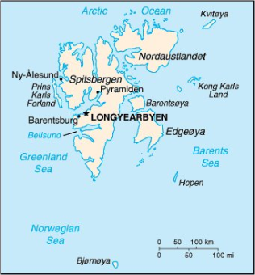<br>
      </td>
      <td style="vertical-align: top;">In 1596 voer Willem Barentsz uit
voor zijn derde  en&nbsp; laatste  reis om de Noord, in een poging de
weg naar het verre China en Cathay te vinden. Op deze reis ontdekte hij
op 17 juni Spitsbergen. Die ontdekking leidde in het begin van de
zeventiende eeuw tot een periode van bloeiende walvisvaart in de
wateren van Spitsbergen en Jan Mayen. Vanwege de spitse bergtoppen
noemde Willem Barentsz de eilanden Spitsbergen. <br>
      <br>
Spitsbergen is eigenlijk een archipel, bestaande uit zeven grote
eilanden en vele kleinere. De gehele eilandengroep beslaat ongeveer de
oppervlakte van Nederland en België samen en wordt door de Noren
aangeduid met de naam Svalbard.<br>
Deze naam is afkomstig uit oude IJslandse annalen en betekent Koude
rand of Koude Kust en verwijst veelal naar het grootste eiland in
deze archipel. In de oude IJslandse geschriften staat dat Svalbard in
het jaar 1194 werd ontdekt.<br>
      <br>
In het Spitsbergenverdrag van 9 februari 1920 werd vastgelegd dat het
bestuur van de eilanden onder Noors toezicht kwam te staan, hoewel het
land wel op zichzelf staat. <br>
Begin van de 20e eeuw was Spitsbergen nog steeds een niemandsland waar
ieder zo'n beetje z'n gang ging.<br>
      <br>
      </td>
    </tr>
  </tbody>
</table>
<table style="text-align: left; width: 1024px;" border="0" cellpadding="2" cellspacing="2">
  <tbody>
    <tr>
      <td style="vertical-align: top;">Toezichthouder en bestuurder op
de eilandengroep is de gouverneur, de Sysselmann, die door de Noorse
overheid wordt aangesteld en zetelt in de hoofdstad Longyearbyen.
Tijdens ons bezoek in 2001 was dit overigens een dame. Nederland was
een van de eerste staten die dit verdrag ondertekende. Ongeveer 40
landen tekenden het verdrag, waaronder Rusland in 1924. Milieuwetgeving
is voor alle participanten van toepassing.<br>
      <br>
Rusland maakt momenteel vrijwel als enige natie gebruik&nbsp; van de
rechten die het Spitsbergenverdrag biedt, alhoewel er regelmatig
twistpunten zijn aangaande bescherming van de natuur en /of&nbsp; het
milieu. Rusland meent dat Noorwegen zijn rechten schendt met een beroep
op bovenstaande regels.<br>
Informatie middels brieven, faxen en e-mails met de autoriteiten in
Spitsbergen leert me dat er nogal wat eisen worden gesteld om op andere
plaatsen dan in Longyearbyen aan de wal te mogen gaan.<br>
      <br>
Een kleine greep uit onze voorbereidingen behelzen o.a. het volgende:<br>
      <ul>
        <li>De zeekaarten en de pilot kan ik gelukkig lenen van een
collega zeiler die hier al eens is geweest. Het zijn weliswaar wat
oudere Fathom kaarten maar dat is geen probleem.</li>
        <li>Hoewel mijn verzekeringspolis het grootste gebied dekt, kom
ik voor Spitsbergen in de Noorderbreedte het e.e.a. tekort. Ik moet dus
voor de periode van de geplande reis voor dit gebied wat bijbetalen.</li>
        <li>Ik moet aan kunnen tonen dat ik over voldoende zee ervaring
beschik en dat de boot zeewaardig is uitgerust. Het simpele feit dat ik
eerst zo'n 2.000'&nbsp; over open water dien te zeilen om Spitsbergen
te bereiken is niet voldoende. Echter gezien voorgaande reizen geeft
deze eis voor mij verder geen problemen. Verder is Tarka uitstekend
uitgerust en ook die eis is geen probleem.</li>
        <li>Mocht er onverhoopt tijdens ons verblijf op Spitsbergen een
SAR operatie nodig zijn, dan worden de kosten hiervan op ons verhaald.
Dit geld ook voor de opstappers en/of gasten! Aangezien mijn
reisverzekering een dekking voor deze kosten heeft van  100.000,-
blijkt dat voor de autoriteiten voldoende te zijn. Ik vertaal de polis
in het Engels en mail deze naar de autoriteiten. Hiermede is men
tevreden.</li>
        <li>Aangezien proviand voor de bewoners per vliegtuig of schip
dient te worden aangevoerd en sterk is gesubsidieerd, is het voor
bezoekers verboden om hier te provianderen. Ook dat is voor ons geen
probleem. Voor elke trip bereken ik hoe lang de reis duurt. Hoe vaak we
wélk gerecht van plan zijn te eten en proviandeer aan de hand daarvan.
Alle proviand wordt genoteerd op uitgebreide lijsten met opgaven van
alle locaties waar de proviand is verstouwd. Tarka kan probleemloos
voor vier à vijf maanden voor enige mensen proviand verstouwen.
Uiteraard afgezien van water, dat vrijwel overal is te verkrijgen</li>
        <li>Om een landgang buiten de hoofdstad Longyearbyen te mogen
maken moet ter bescherming tegen de alom aanwezige ijsberen een groot
kaliber wapen worden meegevoerd. Er vertoeven gedurende het jaar zo'n
3.000 ijsberen op Spitsbergen. Mijn eigen groot kaliber schijfgeweer
weegt teveel om lange stukken mee te wandelen en ik huur derhalve voor
enige maanden een betrouwbaar grendelgeweer. Bij aankomst geeft de
Sysselmann ons later echter duidelijke aanwijzingen dat bij eventuele
aanvallen eerst op zéér korte afstand mag worden geschoten. En ook dan
nog geeft het een enorme juridische rompslomp en extra kosten. Het
blijkt dat er ondanks uitgebreide waarschuwingen af en toe een toerist
door een ijsbeer wordt gedood. Uitkijken dus!</li>
      </ul>
De beste tijd voor ons om de eilanden te bezoeken en niet in het ijs
terecht te komen zijn de maanden juli, augustus en september. September
is voor ons, gezien de lange terugreis, niet aanvaardbaar. We plannen
derhalve ons bezoek in juli en augustus. De kans dat we ook nog door de
Hinloopenstraat kunnen varen is uitermate klein. <br>
Deze passage tussen de beide grote eilanden is vrijwel altijd bedekt
met dik pakijs en voor jachten meestal onbevaarbaar.<br>
Nadat Tarka is voorzien van alle benodigde proviand, water en diesel
vertrek ik met mijn zeilmaat Marten om ergens halverwege Noorwegen mijn
andere zeilmaat Klaas aan boord te krijgen, waarna Marten zal
terugreizen naar Nederland. Klaas heeft namelijk nog een baan en
beschikt helaas niet over voldoende&nbsp; tijd om direct vanuit
Nederland mee te varen en Marten wil niet verder mee naar het noorden:
"Het wordt me daar veel te koud". Het ligt in de bedoeling dat ik samen
met mijn andere opstapper Klaas vanuit Andenes op het eiland Andöy
vertrek naar Spitsbergen.<br>
      <br>
Op 9 juni vertrekken we vanuit Texel richting Noorwegen. Het begint
goed want er is geen wind. Dan maar rustig de motor bijgezet. Het
blijkt telkens weer dat als je lange trips wil maken je toch nog
redelijke stukken de motor bij moet hebben. Later kunnen de zeilen
worden gezet en kunnen we met sterk wisselende wind richting Noorwegen
zeilen. We willen het rustig aan doen en ik wil Marten diverse
plaatsjes laten zien die ik op vorige reizen heb bezocht.<br>
      <br>
Noorwegen is voor mij een buitengewoon plezierig gebied om te zeilen.
Het is er rustig en niet vergeven van de toeristen.Vele kleine
havenplaatsjes en ankerplaatsen. Af en toe kunnen we zelfs de
halfwinder zetten, doch meestal moeten we hoog aan de wind zeilen of
kruisen hetgeen niet altijd even comfortabel is. Bij gunstige wind laat
ik de Watt-as zakken om de accu's te laden.<br>
      <br>
11 Juni is de voorspelling NW 5-6 en we steken twee reven. Marten heeft
zijn gebruikelijke zeeziekte dagen en, zoals gebruikelijk, zijn
pilletjes te laat ingenomen. "Ik dacht dat het nu wel goed zou gaan" is
het commentaar, hij leert het ook nooit. De wind ruimt verder naar NNW
en het wordt echt onaangenaam. Alleen dwazen en zeilers zeilen tegen
de wind is een Engels gezegde. Er staat een zware deining en het is
nog 95' naar Haugesund.<br>
      <br>
Op 13 juni lopen we met enige moeite, ik heb van dat gebied namelijk
alleen een grote BA kaart, het kleine haventje Skudenes aan, meren
langszij een prachtige houten kotter en worden we verwelkomd door de
nog steeds aanwezige grote dolfijn. Log: 504', we hebben nogal wat
moeten kruisen.<br>
In Noorwegen kun je via de Indreleia geheel beschut tot aan de
Noordkaap varen. De bekende Hurtig schepen volgen deze route met vele
toeristen aan boord. Van oudsher zijn dit de postschepen van Noorwegen
die post en proviand verzorgen van de duizenden kleinere en grote
eilanden. Helaas zijn de fraaie klassieke postschepen vervangen door de
luxe cruiseschepen van heden ten dage. In de Indreleia, met aan de
zeezijde grote en kleine rotsen en eilanden die je beschermen, heb je
uiteraard altijd wind mee of tegen. En, zoals mijn ervaring, vrijwel
altijd tegen. Wij volgen deels deze Indreleia doch gaan, indien
mogelijk, grotendeels zeilend buitenom omdat dat sneller gaat en je
eventueel slagen kunt maken. Onderweg op diverse plaatsen prachtig
ankerend bereiken we op 16 juni de Hanzestad Bergen waar we enige dagen
de stad verkennen.<br>
      </td>
    </tr>
  </tbody>
</table>
<table style="text-align: left; width: 1024px;" border="0" cellpadding="2" cellspacing="2">
  <tbody>
    <tr>
      <td style="vertical-align: top;">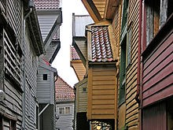<br>
      </td>
      <td style="vertical-align: top;">Bergen is de op één na grootste
stad van Noorwegen met zo'n 250.000 inwoners. De stad werd volgens de
overlevering in 1070 gesticht door koning Olav Kyrre. Tot 1299 was het
de hoofdstad van Noorwegen. Tegen het einde van de 13e eeuw werd het
een van de belangrijkste Hanzesteden In 1655, tijdens de tweede
Nederlands-Engelse oorlog, werd er in de baai een hevige zeeslag
uitgevochten tussen een Engelse oorlogsvloot aan de ene kant en een
Nederlands koopvaardij- en oorlogsvloot uit Oost Indië en het Noorse
garnizoen van Bergen aan de andere kant.<br>
      <br>
Bryggen, het middeleeuwse bestuurs - en handelscentrum ligt aan de
baai Vågen en staat op de UNESCO werelderfgoedlijst.&nbsp; Bergen is de
geboortestad van de bekende componist Edvard Grieg en Ludvig Holberg.
Hier staat o.a. het voormalige huis&nbsp; van Edvard Grieg;
"Troldhaugen", alsmede diverse musea.<br>
      <br>
      <br>
      </td>
    </tr>
  </tbody>
</table>
<table style="text-align: left; width: 1024px;" border="0" cellpadding="2" cellspacing="2">
  <tbody>
    <tr>
      <td style="vertical-align: top;">Bergen heeft een prachtig oud
havenfront met de beroemde vismarkt aan het einde van de haven.&nbsp;
In Bergen moet ik de geleiderol van de genua repareren en daardoor
geruime tijd in de top van de mast doorbrengen. Als troost bak ik
daarna maar een gemberkoek. Met een kabelbaantje kun je naar de top van
één der hoge bergen vlakbij de stad.<br>
Op de ankerplaats Hiserøyna geeft de bodembegroeiing zoveel problemen
voor het CQR anker dat ik het ouderwetse zware stokanker moet
gebruiken. Hoewel ik vrijwel altijd met het CQR anker betrouwbaar heb
geankerd, geeft dit anker bij zware bodembegroeiing soms problemen. Met
wisselende winden zeilen we buitenom via Alesund naar een minuscuul
klein steigertje in Harøya. In vrijwel alle kleine haventjes is er wel
een steigertje met een gjestebrygge. Havenmeesters zijn er niet doch
wel een klein RVS kastje waarin je het havengeld kunt deponeren.
Drinkwater is in Noorwegen overal te verkrijgen. Hoewel Tarka een ruime
watertank heeft van 330 ltr. is het mijn gewoonte om altijd water te
tanken indien de gelegenheid zich voordoet.<br>
Verder gaat het maar weer naar het noorden. Je realiseert je gaandeweg
steeds meer hoe lang het land Noorwegen eigenlijk is tot aan de
Noordkaap. Hoewel ik vrijwel alle kaarten van Noorwegen heb, kopen we
in sommige plaatsen de Noorse detailkaarten van dat gebied. De BA
kaarten die ik destijds heb aangeschaft schieten dan toch tekort als je
stukken door de Indreleia wilt varen en kleine ankerplaatsjes wilt
opzoeken.<br>
      <br>
      </td>
      <td style="vertical-align: top;">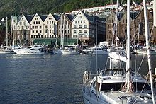<br>
      </td>
    </tr>
  </tbody>
</table>
<table style="text-align: left; width: 1024px;" border="0" cellpadding="2" cellspacing="2">
  <tbody>
    <tr>
      <td style="vertical-align: top;">&nbsp;In Noorwegen kun je in een
boekenzaak de Noorse zeekaarten kopen van dat gebied. Erg handig. De
kaarten zijn buitengewoon gedetailleerd. De bakens en de routes zijn
echter niet benoemd zoals wij dat hier kennen. Voor aanvang teken ik
met potlood de route op de diverse kaarten zodat je niet in de war
raakt als je van de ene naar een volgende kaart overgaat. Tijdens de
route markeren we op de kaart elk baken dat we passeren middels een
dwarsstreepje. Je raakt anders zeer snel het overzicht
kwijt. Afgezien van de bekende drijvende steekbakens kent Noorwegen het
systeem van ijzeren staken. Soms voorzien van een Handje om de
veilige richting van passeren aan te geven.<br>
      <br>
Op 20 juni hebben we zware deining doch geen wind. Het zal wel ergens
flink waaien of gewaaid hebben. We besluiten om de Vanelus fjord in te
lopen en binnendoor naar Alesund te gaan. We ontmoeten diverse
cruiseschepen van de Hurtigroute. In het kleine haventje van Harøya lig
je prachtig in het oude centrum van het stadje. We kunnen aan het
kleine steigertje liggen en genieten van de omgeving. Ik vind dat één
van de aantrekkelijke punten van Noorwegen. Er zijn ontelbare kleine
haventjes en ankerplaatsen en het is gelukkig voor de meeste toeristen
te ver weg om er druk te worden. De Noren zijn vriendelijke mensen die
vrijwel allemaal Engels spreken. <br><br>22 Juni. Via de Navtex krijgen we nu weer regelmatig de weersberichten
binnen van Rogaland en Bodø. Verder naar het noorden moeten we de
berichten binnenkrijgen die zijn genummerd met een letter en daarna de
berichten vanuit Spitsbergen. <br>
We blijven maar noordwaarts varen en via Kristiansund, Hestvika en
Bessakerholmen zeilen we op 25 juni Rørvik binnen. Het log geeft dan
1.022' aan. We hebben dus nog wel een "Stukje" te gaan. Hier blijf ik
liggen totdat mijn zeilmaat Klaas vanuit Nederland aan
boord kom. Het is koud, de kachel gaat aan en met een Oude Bokma erbij
wordt het erg gezellig.<br>
      <br>
26 Juni gaat Marten met de catamaran naar Namsos, daarna met de snelbus
naar Trondheim en dan verder met de trein naar Nederland.<br>
Ik vul het peilkompas bij omdat er een luchtbelletje in zit. Hoewel
Tarka is voorzien een uitstekend grondtakel met 50 mtr. ketting, leg ik
op de steiger nog een zware tros uit van 50 mtr. en markeer elke 5 en
10 mtr. middels een reepje stof in de tieren.<br>
      </td>
    </tr>
  </tbody>
</table>
<table style="text-align: left; width: 1024px;" border="0" cellpadding="2" cellspacing="2">
  <tbody>
    <tr>
      <td style="vertical-align: top;">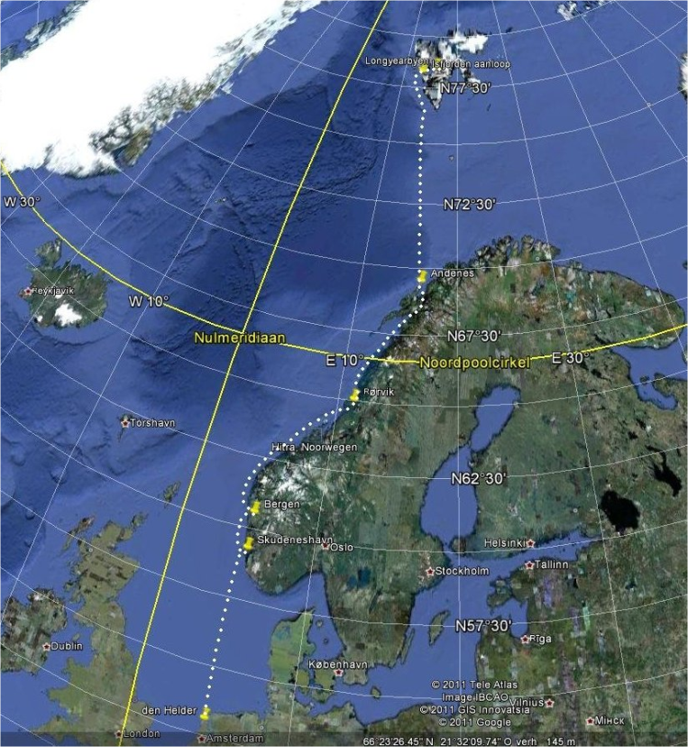</td>
      <td style="vertical-align: top;">Aangezien mijn bakskist zo
langzamerhand vol hangt met vele meters lijnen, trossen, gasflessen en
jerrycans hang ik deze lijn als extra reserve ankerlijn aan de
voorzijde van de mast, beter teveel dan te weinig. Later zal blijken
dat we daar in een later stadium nog veel plezier van zullen hebben. Ik
spreek een zeiler die zelf&nbsp; een ferrocement boot heeft gebouwd van
43 voet met 19 ton waterverplaatsing. Hij wil a.s. vrijdag naar IJsland
varen. Moet kunnen. Verder een nieuwe Morse kabel gemonteerd want de
kabel voor de keerkoppeling was enige dagen geleden gebroken. Deze toen
omgewisseld met de gaskabel. Ik had daarna derhalve een echte
"Machinist" nodig tijdens het manoeuvreren om het gas te regelen.
Tarka, inclusief alles aan boord, is inmiddels 24 jaar oud en dan
gebeuren dergelijke "Rampen" wel eens. Doch tot nu toe heb ik alles
weer zelf op kunnen lossen.<br>
      <br>
27 Juni komt Klaas, met de bus uit Nederland, aan boord. Ik had hem nog
helemaal niet verwacht aangezien hij volgens de berichten pas overige
enige dagen zou arriveren. <br>
      <br>
28 Juni de watertank gevuld en maar weer verder naar het noorden toe
gezeild. We gaan buitenom omdat we, uiteraard zou ik zeggen, weer op
moeten kruisen tegen de noordelijke wind. Ik heb het vaak als een
stelling geponeerd: Navigatie voor een zeiler op zee stelt eigenlijk
niets voor; <br>
je koers ligt namelijk altijd dáár waar de wind vandaan komt!&nbsp;
Later lopen we, vanwege slecht weer, via een fjord naar binnen om via
de Indreleia verder noordwaarts te komen. Het weer verslechterd en het
zicht is zeer matig, we varen constant met de radar bij en zoeken
voorzichtig een ankerplaatsje. Een Noor in een roeibootje komt de
volgende dag langszij met de vraag: "Hedde du nog sprite"? Drank is in
Noorwegen namelijk buitensporig duur, je zou er bijna geheelonthouder
van worden. <br>
Klaas geeft keurig antwoord in&nbsp; het Fries waarmede de man geheel
tevreden is. <br>
Door het fjord vaart heel parmantig een klein slepertje met de
Nederlandse vlag! Overigens een prachtig gebied voor motorbootvaarders,
maar elektra aansluitingen zijn ver te zoeken!<br>
      </td>
    </tr>
  </tbody>
</table>
<table style="text-align: left; width: 1024px;" border="0" cellpadding="2" cellspacing="2">
  <tbody>
    <tr>
      <td style="vertical-align: top;">30 Juni passeer ik wederom,
zoals in '94 en&nbsp;'96, de Poolcirkel met het daarbij behorende monument
op een klein rotseilandje. Men heeft nu zelfs een klein steigertje
aangebracht zodat je kunt aanmeren! Het blijft modderen met de wind.
Zeilen bij, zeilen neer, halfwinder erop, halfwinder er weer af.&nbsp;
Echter op 1 juli lopen we de beroemde Trollfjord in.<br>
De Trollfjord is een 2 kilometer lang en slechts 100 meter breed fjord
aan de monding van Raftsund, de 20 km. lange zee-engte tussen de
eilanden Hinnøya en Austvågøy. In 1880 vond hier de Slag van de
Trollfjord plaats. Vissers in de moderne door stoom aangedreven boten
met sleepnetten stonden tegenover vissers in kleine "Fembøringer", de
traditionele boten met zeilen en roeispanen voor 5 roeiers.&nbsp; Alle
schepen van de Hurtigruten doen dit zéér smalle doch diepe fjord aan om
de toeristen&nbsp; te plezieren. Klaas was hier nog nooit geweest dus
we gaan binnen kijken. Het is een indrukwekkende fjord&nbsp; waar je
tot vlakbij de steile rotswanden kunt varen en dan nog steeds diep
water hebt. Vele grote schepen hebben met verf &nbsp;hun scheepsnaam hier op
de rotsen geschilderd. De schepen van de Hurtigruten draaien hier
middels hun boeg-en hekschroeven op de plaats rond en dan hebben ze
echt niet veel ruimte over aan boeg en hek. Wij ankeren hier vlakbij en
genieten van het uitzicht en de rust.<br>
Op de Sortland Sund zien we enige grote visarenden met hun geweldige
spanwijdte. Een werkelijk imponerend gezicht om deze grote vogels hier
te zien. De visarenden worden echter continu gepest door een zwerm
meeuwen.<br>
De Risøyrenne&nbsp; ligt aan het einde van de Sortland Sund en is een
zeer ondiep gedeelte. De Hurtigroute vaart hier uiteraard buitenom doch
wij gaan via de ondiepten, die overigens zeer goed zijn betond,
richting Andenes het noordelijkste puntje van de Vesterålen.&nbsp; Om
Noorwegen nog noordelijker te volgen heeft geen nut aangezien we dan
meer NW richting Spitsbergen moeten varen.<br>
      </td>
      <td style="vertical-align: top;">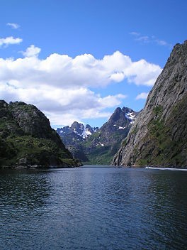<br>
      </td>
    </tr>
  </tbody>
</table>
<table style="text-align: left; width: 1024px;" border="0" cellpadding="2" cellspacing="2">
  <tbody>
    <tr>
      <td style="vertical-align: top;"><br>
2 Juli lopen we met enige moeite de zeer gecompliceerde haven van
Andenes binnen. Jaren geleden is hier een zeer grote haven aangelegd
voor de NAVO waar we niet mogen liggen. Bij binnenkomst in deze haven
is absoluut niet te zien waar we zouden kunnen gaan liggen. Ik klim de
mast in om een beter overzicht te krijgen en dirigeer Klaas naar een
ander haventje waar ik enige kleine mastjes zie. Het haventje is
vergeven van de staken, bakens en rotsen. Als we een staak, wél
degelijk aan de juiste zijde, maar kennelijk iets te dichtbij passeren
raken we een rotspuntje. "Dat wordt dus weer repareren" denk ik. Later
vraag ik een visserman wat in hemelsnaam de juiste route is in dit
haventje en dan blijkt het, uiteraard, heel eenvoudig te zijn als je
het weet. Log: 1.362'. <br>
Andenes is een kleine plaats waar niet veel te beleven is. We tanken
hier water en via de eigenaar van de dieselpomp kunnen we van het
plaatselijke vliegveld faxen ontvangen met de weerssituatie voor de
komende dagen. Gezien het slechte weer blijven we eerst nog maar even
liggen en wachten beter weer af. Het is een klein haventje waar we nog
moeten verhalen ook omdat we anders met laagwater op de grond zitten.
Het Polarinstituut op Spitsbergen&nbsp; geeft op 2.524 kc om 21.00 uur
informatie over de plaatselijke ijssituatie aldaar. Hopelijk is het
ijsvrij als we daar aankomen, maar dat verwachten we eigenlijk wel.<br>
      <br>
4 Juli zijn de weersberichten dusdanig dat we vertrekken, koers noord.
Nog een kleine 550' te gaan. De wind zit voorlopig in&nbsp; de goede
hoek en we lopen rond de 6,5', helemaal niet slecht. Als ik een tocht
van meerdere dagen maak, houd ik een wachtsysteem aan van 3 x 4 uur s
nachts en 2 x 6 uur overdag. Aangezien dit een oneven aantal is,
verschuiven de wachten voor de twee opvarenden. Tarka is uitgerust met
een uitstekend werkende windvaan stuurinrichting die ik in de winter
van 1993 heb gemaakt ter voorbereiding van de eerste Rusland trip en
die, na instelling, een vaste koers houdt t.o.v. de wind. De windvaan
verbruikt geen stroom en is buitengewoon sterk. De elektrische
autopilot gebruik ik uitsluitend als er geen wind is én als de motor
draait. Het is vrijwel ondoenlijk om met slechts twee mensen aan boord
lange tochten achtereen te varen. De wachtsman dient nu derhalve
uitsluitend wacht te houden, de positie te noteren tijdens de wisseling
van de wacht en, eventueel, de windvaan iets bij te stellen. Voor
kortere tochten houd ik meestal 4 op 4 af aan met een gedeelde
platvoetwacht zodat we weer een oneven aantal wachten hebben.<br>
Tijdens mijn wacht landt er om 23.00 uur een klein, dodelijk vermoeid
vogeltje in de kuip. Het blijkt een kruisbek te zijn doch ik heb helaas
niets om hem te voeren, het is een pure zadeneter. Door het slingeren
schuift het beestje steeds heen en weer over de kuipbank doch ik kan er
probleemloos een antislipmatje onderschuiven zodat het beestje in elk
geval rustig kan slapen. De volgende dag vliegt het beestje een paar
rondjes doch keert dan weer terug aan boord. Hij opent met zijn
speciaal gevormde snaveltje de tieren in een landvast op zoek naar
zaadjes alsof het een dennenappel is, helaas dat wordt niets. Enige
uren later vertrekt hij weer. We zijn echter ruim 100' van het land. Ik
heb er een hard hoofd in dat hij het haalt, maar ik hoop het van harte
doch ik word er wel een beetje triest van.<br>
De wind wisselt sterk in kracht en richting en we zijn steeds
bezig&nbsp; de zeilen en windvaan bij te stellen om toch maar noord te
kunnen varen. Het verbaast me nogal dat we continu stroom tegen hebben.
Kennelijk heb ik de route iets te dichtbij of te ver van het land
gekozen.<br>
In de eerste wacht van 20.00 tot 24.00 uur bak ik regelmatig zelf een
bruinbrood in het oventje. Het deeg laat ik dan rijzen in de slaapzak
want in de kajuit koelt het teveel af. Het ruikt dan heerlijk in de
kajuit en we hebben weer vers brood. De zon staat om 24.00 uur nog
vrolijk boven de kim en het wordt al dagen niet meer donker 's nachts.
Na het passeren van de poolcirkel heb je dit verschijnsel. Om onszelf
te verwennen bak ik op 7 juli&nbsp; tijdens de voormiddagwacht maar
weer eens een gemberkoek. Het gaat per saldo niet slecht, dus we hebben
wel wat verdient. <br>
      <br>
      </td>
    </tr>
  </tbody>
</table>
<table style="text-align: left; width: 1024px;" border="0" cellpadding="2" cellspacing="2">
  <tbody>
    <tr>
      <td style="vertical-align: top;">Als het schip goede vaart loopt
laat ik regelmatig de Wattas zakken om de accu's op te laden. We
verbruiken niet veel elektriciteit maar de elektronica en de navigatie
staan natuurlijk wel bij. Elektrische waterpompen vindt je niet aan
boord van de Tarka, dat gebeurt allemaal middels voetpompjes, ook voor
het buitenwater. De temperatuur begint nu toch te dalen. Het is buiten
nu 8,6ºC en we zijn er nog lang niet. Maar het loopt goed, dus geen
reden om te klagen. <br>
Op 8 juli trekt de wind behoorlijk aan en ruimt naar NW. We lopen nu
hard richting Spitsbergen maar het is verrekte koud buiten, 6,8ºC. We
zitten met thermokleding, laarzen en muts in de kajuit, leuk is anders.
Om 20.00 uur die dag zien we door de nevel de eerste bergen van
Spitsbergen maar het zijn nog vele mijlen zeilen voordat we in
Longyearbyen kunnen aanmeren. Er blijft een zware deining staan.<br>
      <br>
      </td>
      <td style="vertical-align: top;">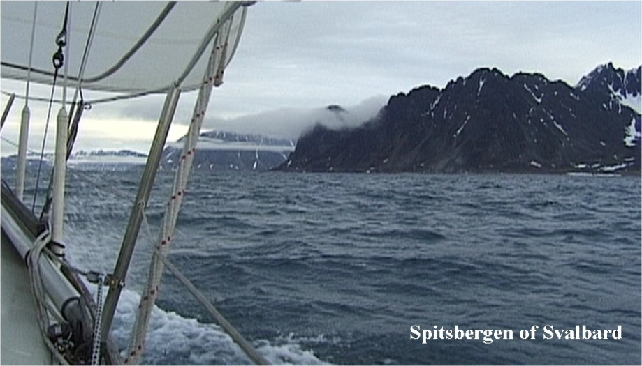<br>
      </td>
    </tr>
    <tr>
      <td style="vertical-align: top;">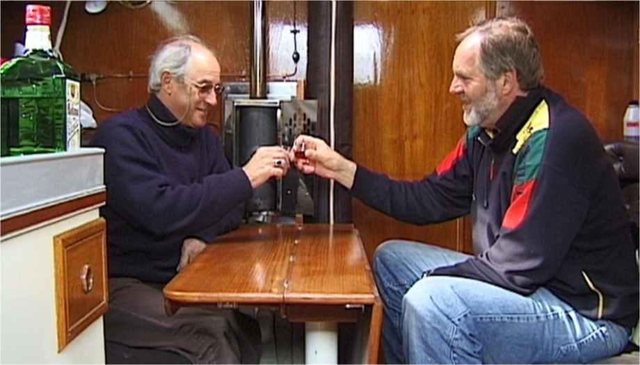<br>
      </td>
      <td style="vertical-align: top;"><br>
9 Juli om 08.00 uur lopen we de
Isfjorden in en leggen de laatste 23'af naar Longyearbyen waar we om
14.00 uur aanmeren langszij een Canadees jacht. Log: 1.968',
buitentemperatuur 1,9ºC. Allereerst de oliekachel aansteken en een paar
Oude Bokma's innemen tegen de koude! Tot zover is alles voortreffelijk
gelopen en we proosten op de goede gang van zaken tot nu toe.<br>
's Middags gaan we het plaatsje in, maar dat stelt niet zoveel voor. We
nemen een douche en wassen enig ondergoed. Morgen gaan we ons wel
melden bij de Sysselmann. Naar huis bellen kan alleen met de vaste
telefoon. Mijn mobieltje kent deze provider namelijk niet. <br>
      <br>
Buiten enige nederzettingen, weerstations en onderzoekcentra is
Longyearbyen, op 78º noorderbreedte, de grootste nederzetting op
Spitsbergen met ongeveer 1.700 inwoners. Er zijn enige verharde wegen
en een onnoemelijk aantal sneeuwscooters. <br>
      </td>
    </tr>
  </tbody>
</table>
<table style="text-align: left; width: 1024px;" border="0" cellpadding="2" cellspacing="2">
  <tbody>
    <tr>
      <td style="vertical-align: top;">De plaats vond zijn oorsprong
toen de Amerikaan John Munroe Longyear uit Boston, eigenaar van&nbsp;
de Arctic Coal Company, hier in 1906 een nederzetting stichtte voor het
behuizen van de arbeiders in de steenkoolmijnen. Er zijn nog steeds
diverse mijningangen te zien in de bergwanden. Momenteel zijn echter
uitsluitend de Russen nog bezig met het winnen van steenkool, de
resterende mijnen zijn gesloten.<br>
In een berg in de buurt bevindt zich de Svalbard Global Seed Vault, de
wereldzaadbank van voedselgewassen, geopend begin 2008. Alle zaden ter
wereld moeten hier worden bewaard op een zodanige wijze dat ook na
rampen elders in de wereld de zaden hier behouden blijven. Overigens
hebben wij deze Vault in 2001 uiteraard niet gezien.<br>
Aan het begin van de tweede wereldoorlog waren er op Spitsbergen
geallieerde soldaten gelegerd. In 1941 echter werd de gehele bevolking
van toen 765 Noren en 2.000 Russen geëvacueerd na dreiging door Nazi
Duitsland. In mei 1942 werd het eiland heroverd in expeditie "Fritham".
In september 1943 echter bombardeerden de Duitse slagslepen Tirpitz en
Scharnhorst alsmede negen torpedojagers alle nederzettingen op
Spitsbergen waarbij vele doden vielen te betreuren. In 1944 werd de
kleine nederzetting Sveagruva door saboteurs van een Duitse onderzeeër
met de grond gelijk gemaakt.<br>
De mijnbouw werd in 1946 hersteld en in 1966 werd de zevende mijn
geopend. Momenteel haalt Longyearbyen de meeste inkomsten echter uit
het toerisme en pool onderzoek.<br>
      </td>
      <td style="vertical-align: top;"><br>
      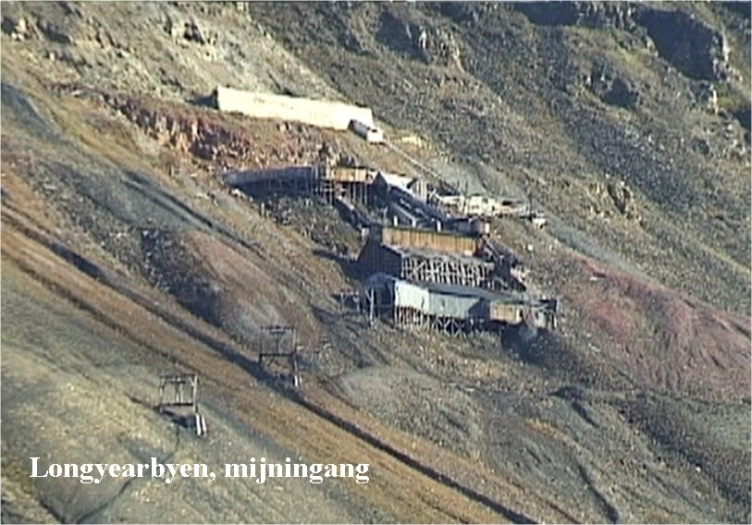<br>
      </td>
    </tr>
  </tbody>
</table>
<table style="text-align: left; width: 1024px;" border="0" cellpadding="2" cellspacing="2">
  <tbody>
    <tr>
      <td style="vertical-align: top;">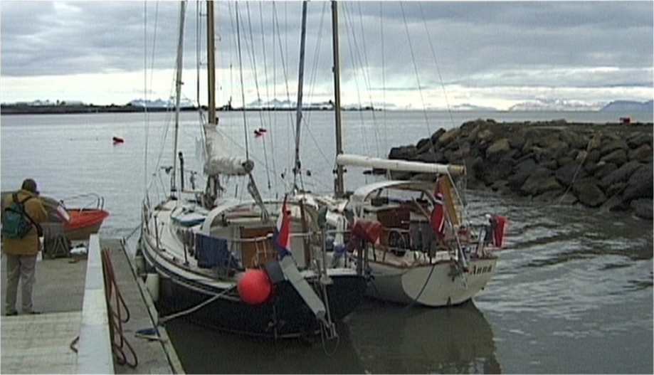<br>
      </td>
      <td style="vertical-align: top;"><br>
10 Juli brengen we een bezoek aan de Sysselmann; mrs. Trudy. Mijn
papieren liggen daar reeds en alles gaat zeer vlot. Ze informeert of ik
een wapen aan boord heb en na bevestiging daarvan krijgen we nog enige
voorlichting hoe we ons hebben te gedragen bij een eventuele ontmoeting
met een ijsbeer. De ijsbeer is streng beschermd. Aangezien ik een groot
kaliber geweer bij me heb mogen we overal aan land. Een ijsbeer is een
prachtig en zeer imposant dier. Mrs. Trudy vertelt ons dat een ijsbeer
in rust in een sneeuwlandschap eerst op het allerlaatste moment is te
zien. Hij kan in zéér korte tijd een sprintje trekken van 60 km per
uur, dat redden wij dus niet.<br>
We vragen tevens een permit om ook in Virgohamna aan land te mogen gaan
en de vele overblijfselen te bekijken van enige ballontochten naar de
Noordpool uit het verleden. De Sysselmann wijst er nogmaals
uitdrukkelijk op dat álle restanten van wélke aard dan ook, historisch
erfgoed zijn en dat er niets mag worden verplaatst danwel meegenomen.
Hoewel mij reeds bekend, verteld ze dat het eilandje Moffen, waar een
grote walrussen kolonie leeft, absoluut niet mag worden betreden. <br>
      <br>
      </td>
    </tr>
  </tbody>
</table>
<table style="text-align: left; width: 1024px;" border="0" cellpadding="2" cellspacing="2">
  <tbody>
    <tr>
      <td style="vertical-align: top;">We dienen minimaal 300 mtr.
afstand van Moffen te houden. Er staan zeer forse boetes op het
overtreden van de diverse voorschriften. Moffen ligt geheel in het
noorden van de archipel. We dienen ons reisplan in met de diverse
waarschijnlijke data zodat er bij niet tijdige terugmelding bij de
Sysselmann in Longyearbyen, na enige tijd, een zoektocht kan worden
gestart. Per marifoon is de Sysselmann niet te bereiken. Korte golf heb
ik nu niet meegenomen en een satelliettelefoon heb ik niet. Het zal dus
wel even duren voordat ze ons gaan zoeken, hopelijk is het niet nodig.<br>
      <br>
Onze Canadese buren komen uit Victoria in Canada en zijn reeds vijf
jaar onderweg. Van hem verneem ik dat hij de weersberichten ontvangt
van Bereneiland op 1.757 kc om 12.05 uur! Er loopt nog een Pool uit
Gdynia binnen.s Avonds wordt er op het kajuitdak geklopt. Als we
buiten kijken hebben we een mooie sneeuwlaag op het dek liggen en staat
er een Nederlandse dame op het steigertje, Marina van Dijk, met haar
huskys. Ze had onze Nederlandse vlag gezien en komt even een praatje
maken en ons tevens uit te nodigen om tijdens ons verblijf hier eens
bij haar langs te komen. Ze woont hier sinds zes jaren en is goudsmid.
Door de komst van de vele toeristen&nbsp; heeft ze nu een goede
boterham. Haar vriend is in Nederland om een nieuw aluminium zeiljacht
af te bouwen waarmee ze voornemens zijn om zich, samen met de honden,
eens in te laten vriezen in één der fjorden. Verder willen ze tochten
organiseren voor de toeristen.<br>
      </td>
    </tr>
  </tbody>
</table>
<table style="text-align: left; width: 1024px;" border="0" cellpadding="2" cellspacing="2">
  <tbody>
    <tr>
      <td style="vertical-align: top;">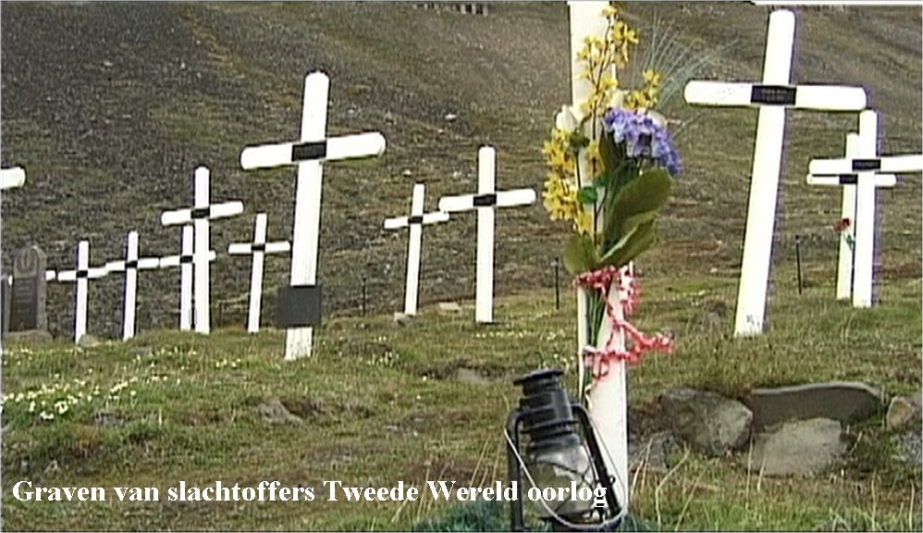<br>
      </td>
      <td style="vertical-align: top;">Op de kop van de oude pier
kunnen we onze GPS corrigeren. Evenals ik destijds in Finland aantrof
heeft men ook hier de exacte coördinaten van dit punt op een bord
vermeld. Je kunt dan een correctie aanbrengen op je eigen GPS. Onderweg
naar het bekende restaurant Huset, waar in de hal een rek staat voor
geweren i.p.v. paraplu's, passeren we nog een kerkhofje waar de
slachtoffers uit de tweede wereldoorlog liggen. In de rotswanden zie je
nog diverse mijningangen die sinds lang niet meer in gebruik zijn.
Langs de weg staat nog een oude stenenkraker. Stukken rots werden hier
zover verkleind dat ze als wegbedekking konden worden gebruikt. Later
werden nog enige kilometers asfaltweg aangelegd. <br>
      </td>
    </tr>
    <tr>
      <td style="vertical-align: top;">Het kleine museum is zeker een
bezoekje waard. We vinden hier een overzicht van de geschiedenis van de
archipel en tevens enige voorbeelden van de wijze waarop in het
verleden ijsberen en poolvossen werden gevangen en gedood. Een wrede
bedoening. Met grote zware klemmen of een met grote dikke keien
verzwaarde val en natuurlijk met de&nbsp; Auto shot werden deze
dieren gedood en de huiden verkocht. De Auto shot bestond uit een
houten kist waarin een geweer, veelal met afgezaagde loop, was
gemonteerd. De trekker was met een touwtje verbonden aan een stuk aas.
Zodra de beer, met zijn geweldige reukzin, met zijn snuit aan het aas
trok laten de gevolgen zich gemakkelijk raden.<br>
&nbsp;In Longyearbyen is een klein winkelcentrum waar het e.e.a. te
koop is. We trakteren ons op koffie met een punt taart. Drank, zelfs
bier, is er niet te koop.<br>
Dat kan alleen met een speciale permit van de Sysselmann en op vertoon
van een vliegticket! <br>
      </td>
      <td style="vertical-align: top; text-align: center;">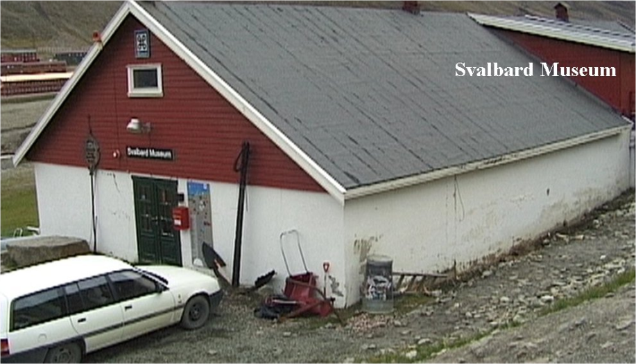<br>
      </td>
    </tr>
    <tr>
      <td style="vertical-align: top;"><span style="font-size: 12pt; font-family: &quot;Times New Roman&quot;,serif;"><br>
      </span>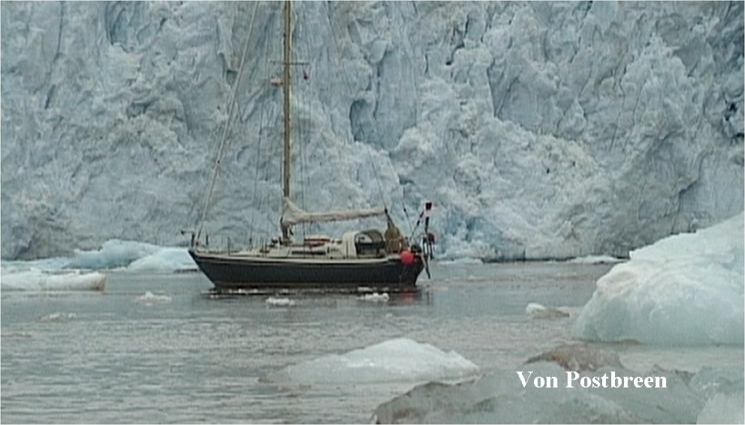<br>
      <span style="font-size: 12pt; font-family: &quot;Times New Roman&quot;,serif;"><br>
We zien de Canadese buurman eveneens die kant uit
zeilen. We zoeken een plekje met een meter of zes waterdiepte doch het
CQR
anker houdt absoluut niet, we krabben als een gek. Anker op blijkt er
een
enorme hoeveelheid meterslange dikke kelp rond het anker te zitten. De
Canadees
ligt vlakbij en ziet ons probleem. <br>
      <br>
      </span>Hij komt aangeroeid met een groot kapmes in de hand om het
anker vrij te hakken. Geweldig. Ik maak de ankerketting nu vast aan het
oude zware stokanker. <br>
      </td>
      <td style="vertical-align: top;">Als we hier weer terug zijn van
onze tocht gaan we de plaats wel eens verder bekijken. We maken een
afspraak met de havenmeester om morgen nog wat diesel bij te vullen.
Het is namelijk nog goed weer en we willen dus verder voordat het weer
omslaat en slecht wordt.<br>
      <br>
11 Juli vertrekken we rond 10.45 uur naar het nabij gelegen
Tempelfjorden om bij Bjönahamn ten anker te gaan. We hebben een fraaie
harde lopende wind naar het fjord, koud,&nbsp; doch af en toe een bleek
zonnetje.<br>
      <br>
      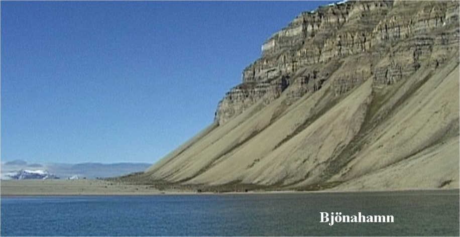<br>
      </td>
    </tr>
  </tbody>
</table>
<table style="text-align: left; width: 1024px;" border="0" cellpadding="2" cellspacing="2">
  <tbody>
    <tr>
      <td style="vertical-align: top;">Steek meer dan genoeg ketting en
laat het ankergewicht ook nog over de ketting&nbsp; zakken. We liggen
nu als een huis. De wind giert nu om de steile hoge rotsen met zware
valwinden, doch we liggen hier goed en bovendien ruimt de wind wat naar
het NE.<br>
      <br>
12 Juli is het prachtig zonnig weer. We laten het anker hier liggen met
een grote rode fender aan de lijn en vertrekken richting de
gletsjer&nbsp; Von Postbreen. Je verkijkt je in deze omgeving
geweldig op de afstanden die je moet varen. Het is een kristalheldere
lucht zoals je ook wel ziet in de bergen, waar je je eveneens verkijkt
op de afstanden. Onderweg naar de gletsjer varen we tussen grotere en
kleinere ijsbrokken door die zijn afgebroken van de gletsjer. Uitkijken
geblazen want verreweg het grootste deel zit onder water en zo groot is
Tarka nu&nbsp; ook weer niet. De gletsjer is zeer indrukwekkend, met
een eindmorene van vele tientallen meters hoog waar regelmatig grote
ijsbrokken afbreken en in het water storten om daarbij een flinke
vloedgolf te veroorzaken. Onderweg krijgen we plotseling diepte alarm.
Dat kan natuurlijk helemaal niet want er staat meer dan voldoende water
hier, maar je schrikt je te pletter. Opeens schiet het me te binnen dat
de grote hoeveelheden zoet water boven op het zwaardere zoute water
blijven drijven. Het echolood ziet blijkbaar de grenslaag van zoet en
zout als de bodem!<br>
We maken uitgebreide filmopnamen vanuit het bijbootje en keren tevreden
en onder de indruk van de&nbsp; natuur terug naar ons anker. In verband
met de meterslange kelp op de bodem hier ankeren we later op 10 tot 15
mtr. diepte waar de groei minder uitbundig is en we vele meters extra
ketting danwel tros steken.<br>
      <br>
13 Juli zeilen we richting Barentszburg,&nbsp; een der Russische
nederzettingen hier, waar we vlakbij het oude walvisstation ten anker
gaan. <br>
      </td>
    </tr>
  </tbody>
</table>
<table style="text-align: left; width: 1024px;" border="0" cellpadding="2" cellspacing="2">
  <tbody>
    <tr>
      <td style="vertical-align: top;">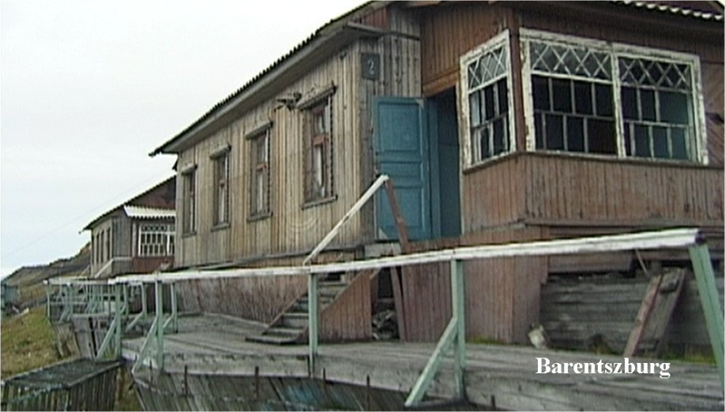<br>
      </td>
      <td style="vertical-align: top;">Het regent en het is koud en
vies weer. Zo ziet de omgeving er hier trouwens ook uit.<br>
&nbsp;&nbsp;&nbsp; Barentszburg is de Russische nederzetting aan een
zijfjord van de Isfjord en is na Longyearbyen de grootste plaats op
Spitsbergen. Er wonen en werken nog zo'n 900 Russen en Oekraïners in de
steenkolenmijnen. Het Russische bedrijf Arktikoegol exploiteert de mijn
hier, doch het mag duidelijk zijn dat dit zwaar verliesgevend is. De
Russen willen echter om strategische redenen op Spitsbergen een
steunpunt houden. De laatste tijd richten de Russen zich meer op het
toerisme. Tot voor kort hadden de Russen tevens nog een grote
nederzetting genaamd Pyramiden met, in de hoogtijdagen, zon 1.000
inwoners. Die nederzetting is nu vrijwel verlaten. <br>
De naam Barentszburg werd in 1924 door de N.V. Nederlandsche
Spitsbergen Compagnie ( Nespico) uit Rotterdam gegeven aan deze
Nederlandse mijnbouwnederzetting. Voorheen heette de nederzetting
simpelweg Green Harbour. De nieuwe naam was een eerbetoon aan de
Nederlandse navigator Willem Barentsz. In 1920 vernoemden Nederlandse
ondernemers de eerder gestichte nederzetting op Bohemanfly, Rijpsburg
naar een van de kapiteins van de expeditie van 1596.<br>
      </td>
    </tr>
  </tbody>
</table>
<table style="text-align: left; width: 1024px;" border="0" cellpadding="2" cellspacing="2">
  <tbody>
    <tr>
      <td style="vertical-align: top;">Barentszburg was in 1926 gereed
om ruim 500.000 ton steenkool per jaar te verschepen maar werd door
financiële problemen niet in bedrijf gesteld. Door financiële problemen
gedwongen werd Barentszburg in 1932 verkocht aan de Sovjet Trust
Arktikugol die de mijn verder exploiteerde. Met de verkoop kreeg de
Nederlandse Spitsbergen Compagnie slechts een fractie terug van de vele
geïnvesteerde miljoenen. De aandeelhouders kregen ongeveer 10% van hun
aandeel uitbetaald en het bedrijf werd geliquideerd. Een mislukte
reddingsexpeditie in 1928 naar de gestrande Italiaanse poolreiziger
Umberto Nobile maakte van Sjef van Dongen een bekende Nederlander.<br>
Ook Barentszburg werd vrijwel geheel vernietigd in de Tweede
Wereldoorlog door de kanonnen van het Duitse slagschip Tirpitz.<br>
Het Spitsbergenverdrag leverde voor de Russen naast steenkolen
concessies ook de mogelijkheid om in de Koude Oorlog de buren te
bespieden. Voor dat doel werd o.a. radiozender geplaatst. Militaire
activiteiten werden echter niet ontplooid en zijn volgens het verdrag
ook verboden.<br>
In 1997 vielen er 23 doden door een mijnbrand. Ook in de Noorse mijnen
vielen regelmatig veel doden. In 1996 stortte, in een zware storm, een
vliegtuig met 141 inzittenden neer boven de Adventdalen. Men heeft ter
herinnering aan deze ramp een kapelletje opgericht in het midden van de
plaats.<br>
Het is een nogal troosteloze en armoedige nederzetting. In het
Barentszburg hotel&nbsp; kunnen we een nieuwe telefoonkaart kopen en
naar huis bellen. De directeur vertelt ons dat men nu ongeveer 300.000
ton kolen produceert. Het grootste deel gaat naar Nederland. De
juffrouw aan de balie vertelt dat het nu vooral 's winters druk is met
toeristen i.v.m. sneeuwscooter tochten. Lenin is nog steeds prominent
aanwezig doch de Wall of Fame is inmiddels geheel leeg en zonder de
fotos&nbsp; van de harde Sovjet werkers, die tijd is voorbij.<br>
      </td>
    </tr>
  </tbody>
</table>
<table style="text-align: left; width: 1024px;" border="0" cellpadding="2" cellspacing="2">
  <tbody>
    <tr>
      <td style="vertical-align: top;">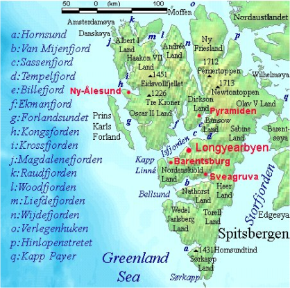<br>
      </td>
      <td style="vertical-align: top;">Men is bezig een nieuw
kappelletje te bouwen voor de gelovigen. Nieuwe betonnen afwateringen
worden aangelegd. De oude houten huizen langs de waterkant zijn allen
verlaten en vervallen. Een triest gezicht. Er is hier een consulaat,
een café en ijstent, Russen consumeren het gehele jaar door ijs.
Natuurlijk een sporthal en uiteraard een bibliotheek met souvenirshop.
Het Pomoren-museum is vanmorgen dicht want de juffrouw van het museum
fungeert momenteel als gids voor de toeristen op twee binnen gelopen
schepen in Longyearbyen. Vanmiddag is ze er weer. Het blijkt een goed
museum met momenteel een uitgebreide collectie over Willem Barentsz.
Men vind het erg leuk&nbsp; dat er Nederlanders komen en ook nog
helemaal zeilend.<br>
Mijn vraag of er nog proviand te koop is wordt ontkennend beantwoord.
Alles is zwaar gesubsidieerd en&nbsp; uitsluitend bestemd voor de
Russen zoals is te begrijpen. Nou ja, zo langzamerhand ben ik redelijk
handig in het zelf brood bakken en mijn opstappers zijn tot nu toe nog
niet gaan muiten, dus dan maar weer zelf aan het brood bakken. <br>
De hier woonachtige Russen zelf vinden het overigens prima want ze
verdienen hier aanzienlijk meer dan in hun thuisland. Men organiseert
hier met wat kleinere schepen toeristische tochten naar de vele
bezienswaardigheden van Spitsbergen. De schepen kunnen zo'n 8 á 12
passagiers aan boord herbergen, hetgeen natuurlijk veel plezieriger is
dan de grote cruiseschepen die alleen in Longyearbyen en Ny Ålesund
kunnen aanmeren.<br>
&nbsp;&nbsp;&nbsp; <br>
      <br>
      <br>
      </td>
    </tr>
  </tbody>
</table>
<table style="text-align: left; width: 1024px;" border="0" cellpadding="2" cellspacing="2">
  <tbody>
    <tr>
      <td style="vertical-align: top;">15 Juli verlaten we Barentszburg
en zeilen naar Engelsbukta waar we ten anker gaan. Bij ons vertrek uit
Barentszburg staat er al weer een Rus op de kade met een stuk steenkool
waarin Holland is geperst. Leuk voor de toeristen en voor de Russen
die er zo een paar centen bij verdienen.<br>
      </td>
    </tr>
  </tbody>
</table>
<table style="text-align: left; width: 1024px;" border="0" cellpadding="2" cellspacing="2">
  <tbody>
    <tr>
      <td style="vertical-align: top;">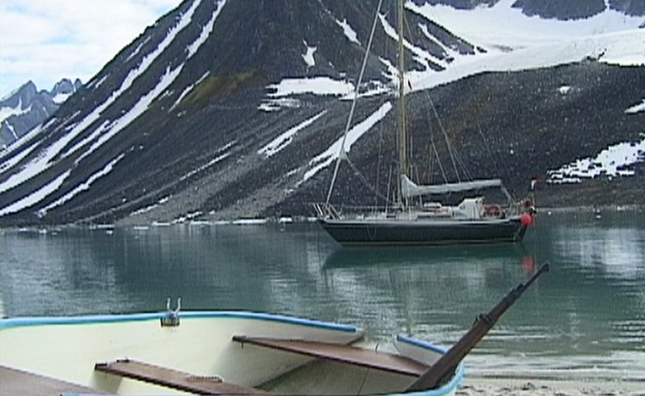<br>
      </td>
      <td style="vertical-align: top;">Engelsbukta was de ankerplaats
en het centrum van de walvisactiviteiten van de Engelsen. We moeten
door de Forland Sundet. Aan de westzijde van deze passage ligt een lang
gerekt eiland Prins Karl Forland. Je vaart hier dan beschermt tegen het
eventuele slechte weer vanuit het westen. Nadeel is wel dat er aan de
noordzijde een rif ligt met een diepte van plm. 3 mtr. Diepte niet
precies bekend staat er op de oude kaart. Het is een steil uit het
water komende verraderlijke ondiepte en ik ben blij als we die veilig
zijn gepasseerd. Er zou een richtlijn moeten zijn, maar die hebben we
niet gezien.<br>
We zien heel nietig tegen de bergen een zeiljacht varen. Het blijkt
onze Canadese buurman te zijn die ook onderweg is naar Engelsbukta waar
we ten anker gaan.<br>
Met de kijker speuren we vanaf onze ankerplaats de wal af op zoek naar
restanten van de nog aanwezige Engelse graven. Echter ook tijdens een
wandeling in de omgeving kunnen we ze niet vinden. Vele graven zijn in
de loop der tijd door ijsberen en vossen geplunderd en sterk
beschadigd. Wel zien we rendieren lopen, die hier echter veel kleiner
zijn dan op Noorwegen. Het is een karig en hard klimaat hier. <br>
      <br>
      </td>
    </tr>
  </tbody>
</table>
<table style="text-align: left; width: 1024px;" border="0" cellpadding="2" cellspacing="2">
  <tbody>
    <tr>
      <td style="vertical-align: top;">Met de bijboot en het
overlevingspak aan gaan we later nogmaals de wal op. Uiteraard
vergezeld van het geweer, je weet maar nooit! Er staat een keurige
trappershut op de wal met twee oude stoelen vanwaar we een prachtig
uitzicht hebben op de omgeving en de baai waar Tarka nu vredig ten
anker ligt. <br>
&nbsp;&nbsp;&nbsp; Later die dag gaan we anker op en vertrekken naar Ny
Ålesund waar we zeer ongelukkig moeten aanmeren langs een paar
verticale balken. Het minuscule kleine drijvende steigertje waar we
eerst aanmeerden blijkt uitsluitend bestemd te zijn voor de rubberboten
van het grote cruiseschip de Deutschland. Log 2.149'.<br>
Ny Ålesund is een keurig verzorgd plaatsje op 78º55 N, waar eigenlijk
alleen wetenschappers en onderzoekers wonen. <br>
Vele landen hebben hier een onderzoekstation gevestigd. Roald Amundsen
vertrok hiervandaan op 11 mei 1926 met het luchtschip Norge voor de
eerste succesvolle vlucht over de noordpool naar Nome in Alaska. Een
borstbeeld van Amundsen herinnert aan deze vlucht. De ankertoren voor
het luchtschip staat er nog steeds. De Italiaan Umberto Nobile heeft er
later ook nog gebruik van gemaakt tijdens zijn dramatisch afgelopen
poolvlucht van 1928.<br>
      </td>
      <td style="vertical-align: top;">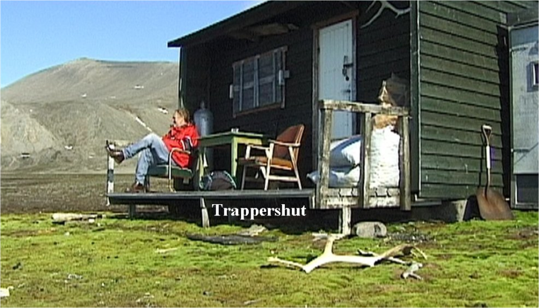<br>
      </td>
    </tr>
  </tbody>
</table>
<table style="text-align: left; width: 1024px;" border="0" cellpadding="2" cellspacing="2">
  <tbody>
    <tr>
      <td style="vertical-align: top;">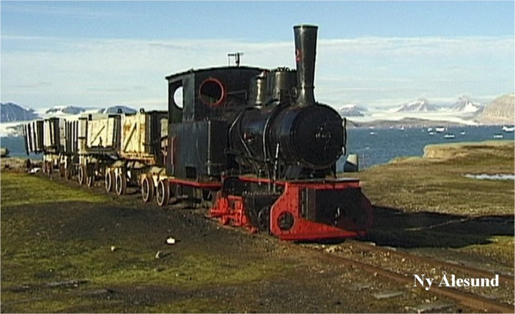<br>
      </td>
      <td style="vertical-align: top;">Op het kleine kerkhofje gaan we
nog langs het<br>
&nbsp;walvisvaardermonument op het gezamenlijke graf van de 50
Nederlandse walvisvaarders die hier destijds zijn omgekomen.<br>
Een nostalgisch kolentreintje herinnert aan de periode dat hier kolen
werden gedolven. Na een zware explosie in november 1962, waarbij
21mensen om het leven kwamen, werd de mijn definitief gesloten. Er is
een boetiekje, dat nu gesloten is maar morgen om 10.30 uur speciaal
voor de toeristen open gaat. Verder is er het noordelijkst gelegen
postkantoor waar we natuurlijk kaarten moeten versturen naar het
thuisfront. <br>
We kunnen in de keuken van het restaurant wat brood, aardappelen, <br>
boter en eieren kopen. Het restaurant is alleen voor de bewoners echter
we kunnen hier toch nog een kop koffie kopen omdat we van zo ver komen!
De GPS positie blijkt hier, na de reeds toegepaste correctie, heel
aardig te kloppen. Geruststellend te weten.<br>
      <br>
      </td>
    </tr>
  </tbody>
</table>
<table style="text-align: left; width: 1024px;" border="0" cellpadding="2" cellspacing="2">
  <tbody>
    <tr>
      <td style="vertical-align: top;">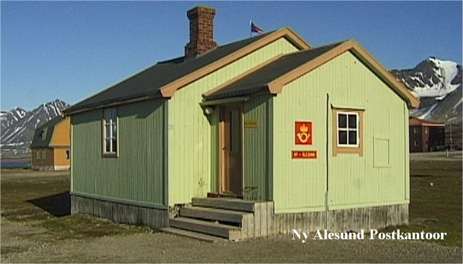<br>
      </td>
      <td style="vertical-align: top;">18 Juli. We hebben veel last van
de vele rubberboten achter ons. <br>
Ze worden slordig vastgemaakt en uiteindelijk nekken ze ons
vlaggenmastje. <br>
Dus maar weer pas maken en inkorten. <br>
Ik ben altijd zéér bezorgd voor achter mij liggende boten i.v.m. de
windvaanbesturing. Het zou een ramp zijn als die wordt beschadigd.<br>
We vertrekken en brengen een bezoek aan de enorme gletsjer de
Kongsbreen waar ook hier regelmatig enorme stukken uit de ijswand
breken en grote vloedgolven veroorzaken. <br>
Het is onverantwoord om vlakbij de ijswand te varen, we filmen derhalve
van een eerbiedige afstand het natuurgeweld vanuit het bijbootje met
Tarka voor de ijswand varend.<br>
      </td>
    </tr>
    <tr>
      <td style="vertical-align: top;">Daarna gaat&nbsp; het naar het
naar het tegenover Ny Ålesund gelegen eiland met de onbewoonde
nederzetting London, waar we vlakbij de marmergroeve ankeren.<br>
In 1911 ontdekte de Engelsman Ernest Richard Mansfield dat er in dit
gebied natuursteen aanwezig was. Hij was een van de oprichters van de
Northern Exploration Co. Ltd. te Londen, welke in 1911 begon&nbsp; met
de exploitatie van een marmergroeve op het nabije
Blomstrand-schiereiland. Door de Company werd de locatie Marble
Island genoemd. Hij claimde het gebied, bouwde een mooi huis genaamd
"Valhalla", een werkplaats en een simpele hijskraan langs het water om
de platen natuursteen in schepen te laden. <br>
      </td>
      <td style="vertical-align: top;">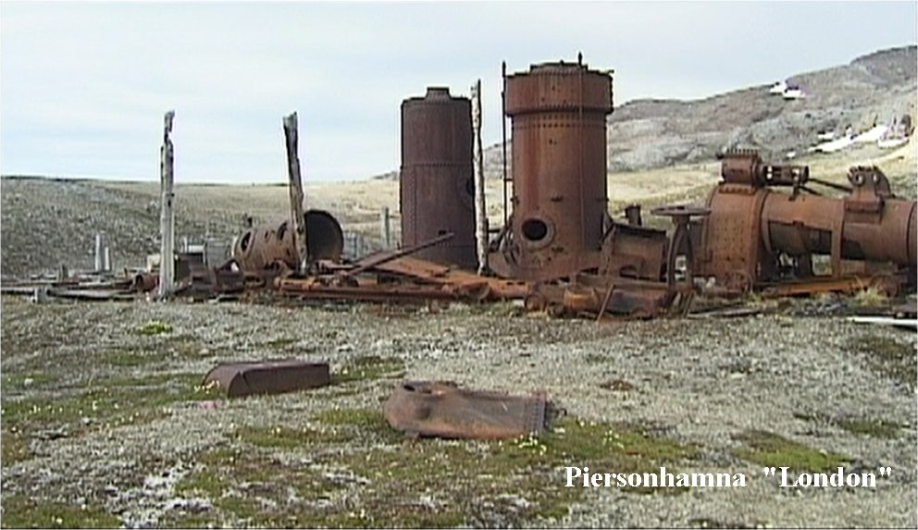<br>
      </td>
    </tr>
    <tr>
      <td style="vertical-align: top;">Er werden stoommachines vanuit
Engeland aangevoerd en een weg aangelegd naar de nieuwe steengroeve.
Het bedrijfje werd aan de beurs van Londen genoteerd en er werd driftig
gespeculeerd. <br>
De bittere teleurstelling kwam toen de eerste lading natuursteen in
Engeland arriveerde. In het warmere klimaat viel de natuursteen in
brokken uit elkaar. Het werd een financieel debacle. De Northern
Exploration Co. werd in 1932 over gedaan aan de Noorse staat. De
nederzetting kreeg van de Noren schertsend de bijnaam London, hetgeen
inmiddels de officiële benaming van de oude nederzetting is geworden.
De restanten van de huizen, primitieve hijskraan, werkplaats en
machines zijn nog steeds te zien. Het grote kolenfornuis staat nog als
een desolate herinnering midden op de houten vloer van het inmiddels in
elkaar <br>
gezakte woonhuis. Alles blijft hier vanwege het koude en droge klimaat
eeuwenlang bewaard. Het is een desolaat beeld en ik bak dus maar weer
eens een gemberkoek ter opmontering.<br>
      </td>
      <td style="vertical-align: top;">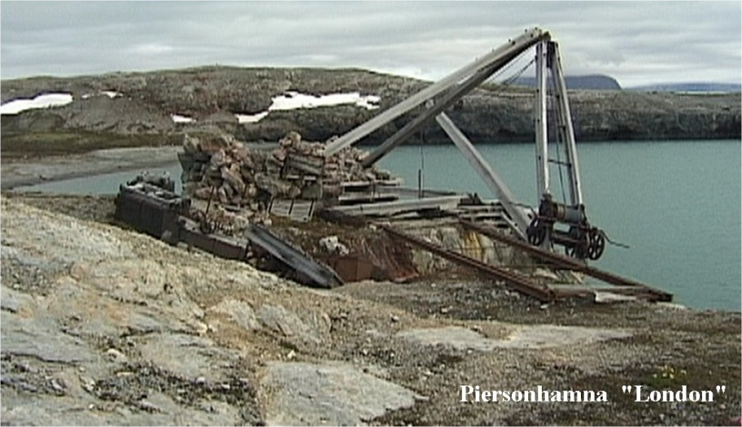<br>
      </td>
    </tr>
    <tr>
      <td style="vertical-align: top;"> 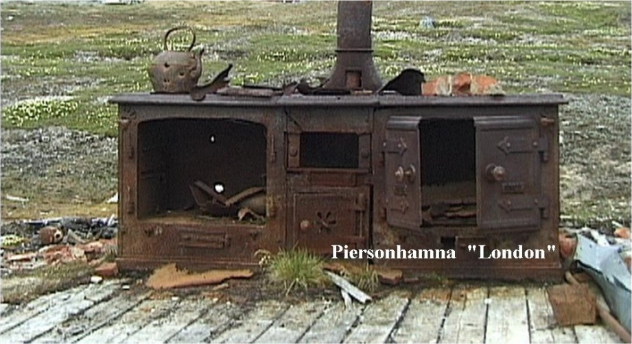<br>
      </td>
      <td style="vertical-align: top;">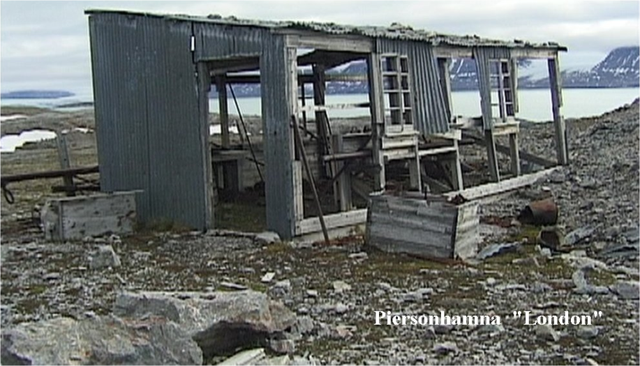 </td>
    </tr>
    <tr>
      <td style="vertical-align: top;">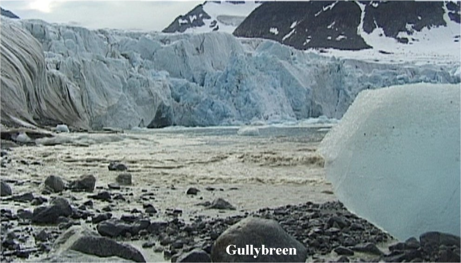<br>
      </td>
      <td style="vertical-align: top;"> Doordat het gletsjerijs zich de
laatste decennia steeds verder teruggetrokken heeft, is aan het licht
gekomen dat Blomstandhalvøya geen schiereiland is, maar een heus eiland.<br>
We zeilen naar het prachtige Magdalenaford en gaan in Trinityhamn ten
anker vlakbij een fraai zandstrandje om daar later de enorme gletsjer
de Wagonwaybreen bekijken. Het is één der grootste gletsjers van
Spitsbergen. De gletsjer bestaat uit twee iets kleinere gletsjers en
vertoont een tweetal zwarte strepen die als karrensporen kunnen worden
bekeken, vandaar de naam <br>
Wagonwaybreen. Het was ons reeds eerder opgevallen dat alle gletsjers
zich soms honderden meters hadden teruggetrokken in vergelijking met de
fotos die wij vóór onze trip hadden bekeken en die ook in de pilot
staan. Kennelijk dus toch veroorzaakt door de opwarming. <br>
We hebben hier in de Magdalenafjord weer een prachtige en veilige
ankerplaats redelijk dicht bij de wal zodat we wederom met de bijboot
aan wal kunnen gaan om de omgeving te verkennen van een kleinere
gletsjer, de Gullybreen. <br>
      <br>
      </td>
    </tr>
  </tbody>
</table>
<table style="text-align: left; width: 1024px;" border="0" cellpadding="2" cellspacing="2">
  <tbody>
    <tr>
      <td style="vertical-align: top;">s Nachts horen we het geratel
van een ankerketting: "Zal wel van een ander zeiljacht zijn dat
eveneens ten anker gaat"  denken we. s Ochtends blijkt echter het grote
cruiseschip de Astor uit Nassau in de fjord ten anker te zijn gegaan.
Dit levert het overbekende beeld op van de moderne toerist. De
bemanning brengt met tenders een tijdelijke steiger aan over enige
bijboten naar de vaste wal. Er wordt een grote tafel aan de wal
gebracht waarop eten en drinken voor de gasten wordt uitgestald. Het
cruiseschip spuwt honderden toeristen uit en een bemanningslid in
berenpak stelt zich aan het einde van de steiger op om de gasten te
verwelkomen en om samen een foto te maken en, uiteraard, weer een
certificaat uit te reiken! Toerisme ten top. <br>
      <br>
Wij spreken een Nederlands echtpaar dat reeds twintig jaar op diverse
cruiseschepen zorgt voor entertainment aan boord. Ze vertellen ons dat
in die twintig jaar de Gullybreen zich ruim honderd meter heeft
teruggetrokken. Toen ze hier voor het eerst kwamen liep de gletsjer nog
tot aan de fjord. Nu ligt er zeker tweehonderd meter tussen gletsjer en
de fjord, maar het blijft een imposant gezicht. Toevallig maken we nog
mee dat er een groot stuk ijs afbreekt en een grote vloedgolf
veroorzaakt. We moeten hard rennen om nog droge voeten te houden en het
is echt koud water hier.<br>
      </td>
    </tr>
  </tbody>
</table>
<table style="text-align: left; width: 1024px;" border="0" cellpadding="2" cellspacing="2">
  <tbody>
    <tr>
      <td style="vertical-align: top;">Terug bij onze ankerplaats
blijken er nog twee zeiljachten ten anker te zijn gegaan, het wordt
druk hier. Eén jacht uit Australië en één uit Nieuw Zeeland, die zijn
een flink stukje van huis! <br>
Trinityhamn werd door de Engelse walvisvaarders ingericht en een korte
periode als zodanig gebruikt. In 1624 echter werd de haven door de
Hollanders gekaapt! Het is echter de vraag of de Hollanders hier ooit
traan hebben gekookt, alhoewel er wél de bekende gele vierkante
IJselsteentjes zijn gevonden. In 1980 zijn in de zandrug 54 graven
geteld van Engelsen en Hollanders. Op de gedenksteen staat vermeld dat
Engelsen en Hollanders hier hebben geleefd en geleden en hun laatste
rustplaats hebben gevonden, een understatement denk ik.<br>
We praten&nbsp; nog wat met een paar Ieren die hier eveneens ten anker
liggen. Brian komt uit de buurt van Belfast. Hij vertelt dat ze het
buitengewoon koud hebben aan boord. Hij had vóór vertrek naar
Spitsbergen een kompleet nieuwe verwarming aangeschaft speciaal voor
deze trip. Doch helaas is de gloeiplug van de kachel defect en kan
derhalve niet worden gebruikt. Ze komen zich later bij ons aan boord
warmen.<br>
      </td>
      <td style="vertical-align: top;">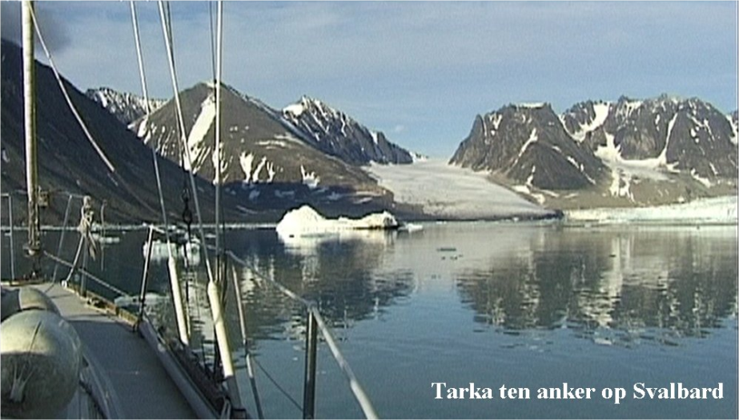<br>
      </td>
    </tr>
  </tbody>
</table>
<table style="text-align: left; width: 1024px;" border="0" cellpadding="2" cellspacing="2">
  <tbody>
    <tr>
      <td style="vertical-align: top;">Hij is jaloers op het eenvoudige
kacheltje aan boord van Tarka dat altijd werkt. Het is een simpel
Dripfeed systeem van Taylors dat geheel zonder elektriciteit werkt,
ben er zeer tevreden mee.Brian wil eigenlijk nog verder naar het
noorden naar het eilandje Moffen om de grote walrussenkolonie bekijken.
      <br>
Ik waarschuw hem om vooral niet te dichtbij het eilandje te komen in
verband met de zéér hoge boetes. <br>
Het cruiseschip Columbus loopt nu binnen. We hebben in loop van onze
trip hier zeker vijf grote cruiseschepen zien varen!<br>
      <br>
21 Juli gaan we anker op en vertrekken richting Amsterdam eiland. De
doorvaart tussen Amsterdam- en Deens eiland is erg nauw en bezaaid met
rotsblokken en ondiepten. Er is echter een duidelijke richtlijn zodat
we veilig binnen kunnen lopen en ankeren vlak voor Andrées monument op
Deens eiland. Log 2.249'.<br>
Voor een bezoek aan Virgohamna hebben we een speciale permit van de
Sysselmann gekregen. <br>
      </td>
    </tr>
  </tbody>
</table>
<table style="text-align: left; width: 1024px;" border="0" cellpadding="2" cellspacing="2">
  <tbody>
    <tr>
      <td style="vertical-align: top;">Dus het geweer om de nek en met
de bijboot naar de
wal en op onderzoek uit. We zien hier de restanten van de mislukte
ballonvaart van Andrée in 1897. Salomon August Andreé, geboren in 1854,
was een Zweedse ingenieur en poolonderzoeker. Hij wilde proberen om per
waterstofballon de geografische noordpool te bereiken. Andrée en zijn
metgezellen maakten in 1896 en 1897 dankbaar gebruik van de restanten
van het woonhuis van de Engelsman Pike. Er werd een grote houten loods
gebouwd om de ballon te beschermen tegen de harde winden alhier. De
restanten van het ijzeren staketsel en de houten wanden zijn nog steeds
goed te zien.</td>
      <td style="vertical-align: top;">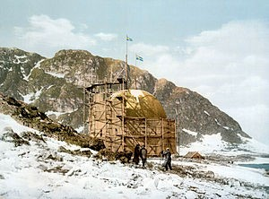</td>
      <td style="vertical-align: top;">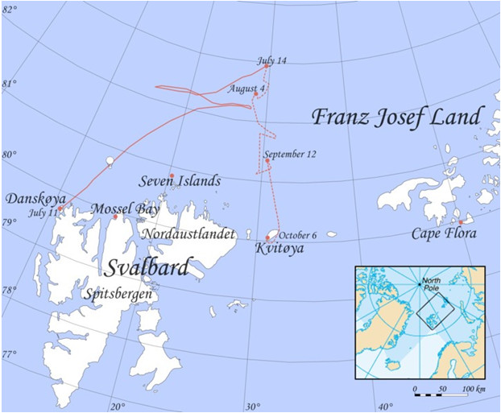</td>
    </tr>
  </tbody>
</table>
<table style="text-align: left; width: 1059px; height: 101px;" border="0" cellpadding="2" cellspacing="2">
  <tbody>
    <tr>
      <td style="vertical-align: top;">Restanten van het vilt, geplakt
tegen de houten zijwanden om schavielen te voorkomen, zijn nog
zichtbaar. Andrée maakte het zeer explosieve doch lichte waterstofgas
door ijzerkrullen te overgieten met zwavelzuur. Om de ballon geheel te
vullen met voldoende waterstofgas was ruim 25.000 kg. zwavelzuur en
15.000 kg. ijzer nodig. De kapot gevroren geglazuurde buizen voor
transport van&nbsp; het zwavelzuur door het ijzervijlsel naar zee zijn
nog duidelijk te zien. De ballon heette de Adelaar. De
ballonexpeditie mislukte echter jammerlijk en de drie opvarenden kwamen
hierbij om het leven.De reis duurde slechts enkele dagen en er werd
niets meer van de onderneming gehoord of vernomen.Ruim 30 jaar later
vond men op het eiland Kvitøya, ten NE van Spitsbergen, de stoffelijke
resten van de bemanning, samen met een niet ontwikkelde film alsmede
het logboek van deze noodlottige expeditie.<br>
In 1906 heeft de Amerikaan Walter Wellman het eveneens geprobeerd. Hij
bouwde een hangaar voor zijn luchtschip bij het basiskamp. Het kwam
echter niet op tijd gereed en hij moest het daarop volgende jaar
terugkomen. Ook deze expeditie faalde. Wellman probeerde het nogmaals
in 1909, doch ook toen bereikte hij de pool niet. Zijn ballon de
America eindigde na 15 minuten op de Smeerenburggletsjer. <br>
      </td>
    </tr>
  </tbody>
</table>
<table style="text-align: left; width: 1024px;" border="0" cellpadding="2" cellspacing="2">
  <tbody>
    <tr>
      <td style="vertical-align: top;">De Hollanders gebruikten
Virgohamna als walvisstation in 1633. In Friesland was de Noordsche
Compagnie opgericht, later genoemd de Harlinger kokerij. <br>
We steken met het bijbootje over naar het Nederlandse walvisstation
Smeerenburg. <br>
Smeerenburg, het Nederlandse walvisstation, ligt op Amsterdam eiland
tegenover Deens eiland. De traanovens, althans de restanten, liggen er
nog net zo bij als voorheen. We gaan op zoek naar het massagraf bij de
grafheuvel aan de noodkant. Hier staan de beide grafstenen van de
Willem Barentsz uit 1878 en van HMS Friesland uit
1906.&nbsp;&nbsp;&nbsp; &nbsp;&nbsp;&nbsp; &nbsp;&nbsp;&nbsp; <br>
De bemanning van HMS Friesland heeft in 1906 de diverse graven
leeggehaald. De restanten werden in een massagraf gedeponeerd tegen een
grote natuursteen. De nieuwe bekisting werd afgedekt met stenen uit de
&nbsp;&nbsp;&nbsp; <br>
buurt. De gedenksteen, daar in 1878 gebracht door de poolschoener
Willem Barentsz werd op de bekisting geplaatst. Een nieuwe steen werd
ervoor geplaatst. Het graf is erg uit elkaar gezakt door het gewicht
van de stenen. Menselijke restanten zijn duidelijk zichtbaar, het ziet
er troosteloos uit.<br>
      <br>
      </td>
      <td style="vertical-align: top;">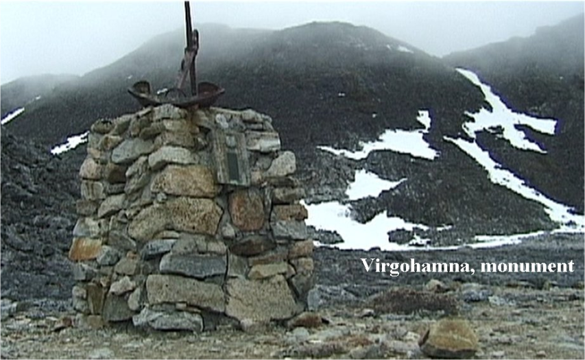<br>
      </td>
    </tr>
  </tbody>
</table>
<table style="text-align: left; width: 1024px;" border="0" cellpadding="2" cellspacing="2">
  <tbody>
    <tr>
      <td style="vertical-align: top;">De traanovens werden opgemetseld
van natuursteen. Daarbinnen bevond zich een tweede ring van gemetselde
gele IJselsteentjes waarin de vuurgang was gemetseld. Hierop stond de
koperen kookpan. De rook werd door twee openingen aan het einde van de
vuurgang geleid en ging via een houten schoorsteen naar buiten.
Gestookt werd met aangespoeld hout of met steenkool.&nbsp; De Denen die
hier eveneens bezig waren met de walvisvaart en traanwinning werden in
dit Hollandse gebied getolereerd in verband met de rechten op de
Sontvaart naar de Oostzee. Men wilde geen problemen hebben met de
Deense koning aangezien veel walvisvaarders ook schepen op de Oostzee
hadden varen. We spreken een paar onderzoekers die hier in een tentje
verblijven. Hun kampje is beschermd door "Tripdraden" ofwel
struikeldraden.. Bij aanraking daarvan door mens of dier, lees ijsbeer,
gaat er een huilende sirene werken en knallen er enige rotjes. Hopelijk
schrikt de beer en vertrekt, doch in élk geval zijn de onderzoekers dan
gewekt. Buiten het verplichtte groot kaliber geweer heeft men veelal
tevens een hagelgeweer of signaalpistool om beren te verjagen.&nbsp; <br>
      <br>
      <br>
      </td>
      <td style="vertical-align: top;">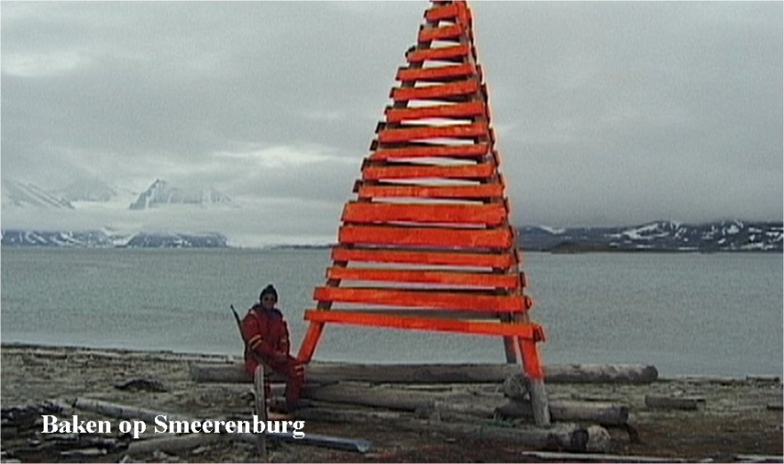<br>
      <br>
      <div style="text-align: center;"><br>
      </div>
      </td>
    </tr>
  </tbody>
</table>
<table style="text-align: left; width: 1024px;" border="0" cellpadding="2" cellspacing="2">
  <tbody>
    <tr>
      <td style="vertical-align: top;">De periode 1615 tot 1650 was de
grote bloeiperiode van de walvisvaart voor de Nederlanders hier. Meer
dan 200 schepen voeren toen naar Spitsbergen en een onvoorstelbaar
aantal walvissen werden hier tot traan gekookt in de enorme traanovens.
Tijdens de barre overwinteringen hier op Smeerenburg stierven er vele
van de bemanningsleden en werden hier onder een partij stenen
begraven. Onvoorstelbaar wat deze mensen hier moeten hebben
doorgemaakt en geleden.<br>
Gezien de bewogen geschiedenis hier word ik er wel buitengewoon triest
en somber van bij de gedachte wat zich hier allemaal heeft afgespeeld.
We gaan weer terug aan boord waar het gelukkig lekker warm is. We
bieden de Ier Brian, die hier ook ten anker ligt doch wiens kacheltje
defect is wegens genoemde gloeiplug, aan om zich bij ons aan boord
samen met zijn drie bemanningsleden even wat op te warmen.Het blijkt
maar weer eens dat eenvoud loont. Technische problemen krijg je nóóit
in eigen land doch altijd in den vreemde, dus hoe minder gecompliceerde
zaken er aan boord zijn, hoe minder er defect kan gaan.<br>
      </td>
    </tr>
  </tbody>
</table>
<table style="text-align: left; width: 1024px;" border="0" cellpadding="2" cellspacing="2">
  <tbody>
    <tr>
      <td style="vertical-align: top;"><br>
22 Juli. We zijn voornemens om na het vertrek van Smeerenburg via het
Danskegat nog wat verder noordwaarts te zeilen naar de 80e
breedtegraad. Dat heeft natuurlijk geen énkel nut doch het is altijd
wel aardig om te weten dat je op 80º noorderbreedte bent geweest,
slechts 600' van de noordpool verwijderd. Het clubje zeilers dat zoiets
kan zeggen is echt niet zo groot denk ik. Na enige tijd zeilen zien we
steeds grotere ijsschotsen en de duidelijke blink van massief ijs. We
laten het derhalve maar voor wat het is, maken een foto van de GPS
stand en gaan nu zuidwaarts. Het noordelijkste puntje dat we hebben
bereikt is: 79º43,4N en 10º55,1E. <br>
      <br>
      </td>
      <td style="vertical-align: top;">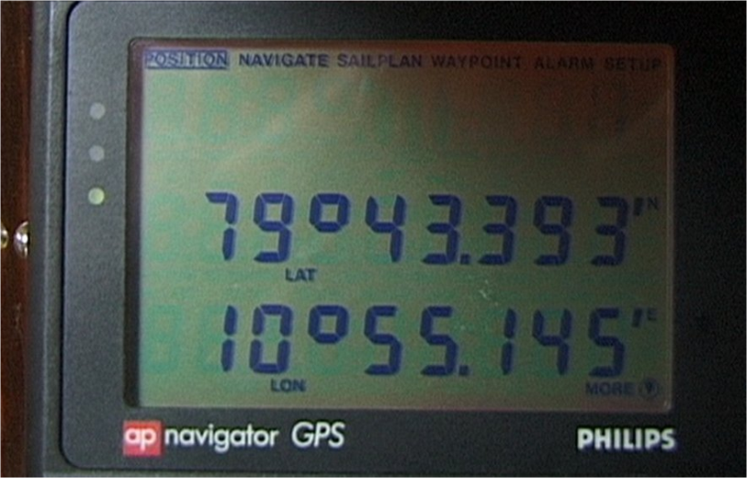 </td>
    </tr>
  </tbody>
</table>
<table style="text-align: left; width: 1024px;" border="0" cellpadding="2" cellspacing="2">
  <tbody>
    <tr>
      <td style="vertical-align: top;">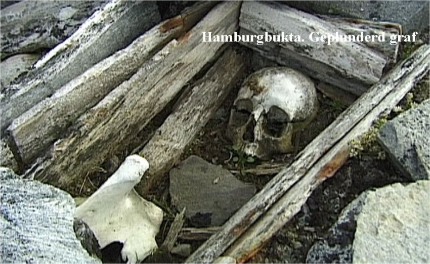<br>
      </td>
      <td style="vertical-align: top;">Hamburgbukta was de baai die
door de Hamburgers werd gebruikt, hoewel niet erg intensief. <br>
De smalle
invaart heeft volgens de Pilot een, onbetrouwbare, diepte van 1 vadem
bij laagwater, dat wordt dus weer spannend. s Middags kunnen we echter
prachtig beschut in de kleine baai ten anker gaan. Er moeten hier nog
restanten zijn van traanovens en een graf. Klaas gaat met de bijboot op
stap. <br>
Na veel zoeken eindelijk het openliggende en geplunderde graf
gevonden met her en der bezaaid liggende menselijke resten alsmede een
verlaten trappershut. Toen hij daar even rondkeek kwamen twee
nieuwsgierige poolvosjes even een kijkje nemen wat of dat wel voor een
wezen was, prachtig om te zien natuurlijk.<br>
We houden nog mooi rustig weer en gaan de volgende dag weer binnendoor
door de Forland Sundet&nbsp; op zoek naar een fatsoenlijke ankerplek.
We kunnen echter geen betrouwbare ankerplaats vinden en zeilen derhalve
maar door naar Longyearbyen. Het is prachtig helder weer en zowaar ook
nog de zon erbij. <br>
      </td>
    </tr>
  </tbody>
</table>
<table style="text-align: left; width: 1024px;" border="0" cellpadding="2" cellspacing="2">
  <tbody>
    <tr>
      <td style="vertical-align: top;">Als we de motor, na urenlang
plezierig
zeilen, wegens windstilte bijzetten gaat het water alarm af en is het
grote schrik aan boord. Alles goed nagelopen doch niets kunnen
ontdekken. Uit de uitlaat komt, zoals gebruikelijk, de normale
hoeveelheid water en de impeller van de waterpomp blijkt ook in orde te
zijn. Geen idee dus wat dit is geweest maar je schrikt wel even. Nog
slechts 5' te gaan naar Longyearbyen waar we s middags om 16.41 uur
aanmeren aan het kleine steigertje. Log. 2.395' en het is zelfs 12,6º C
buiten, wel iets aangenamer dan 1,9º C en sneeuw aan dek! Tot zover
zijn we redelijk tevreden met onze trip naar Spitsbergen.<br>
      </td>
    </tr>
  </tbody>
</table>
<table style="text-align: left; width: 1024px;" border="0" cellpadding="2" cellspacing="2">
  <tbody>
    <tr>
      <td style="vertical-align: top;">We wilden wel graag wat langer
blijven en nog wat verder rondkijken, echter Klaas heeft nog een baan
en we komen dan wellicht in tijdnood. Bovendien willen we het rustig
aan doen in Noorwegen.<br>
      <br>
25 Juli kopen we nog een presentje voor onze dames thuis die ons zo
lang hebben moeten ontberen, voldoen het havengeld en nemen diesel
in. In de kleine supermarkt ontdek ik o.a. voorgerezen brood dat vacuüm
is verpakt. Het is lang houdbaar zonder koeling. Daarna in hotel Huset
een biertje genomen waarvan Klaas, gezien de prijs, vindt dat het pure
oplichterij is. We bellen Marina van Dijk voor een afspraakje en gaan
daar vanavond op bezoek. Ik ga dus maar gauw een gemberkoek bakken als
presentje. Hopelijk houdt ze van gember. We houden de berichten op de
Navtex nauwkeurig in de gaten hoe het er de komende dagen uit gaat zien.<br>
Laat op de avond krijgen we een Noor langszij. Ze maken erg veel kabaal
aan dek, ze&nbsp; zijn kennelijk blij dat ze binnen zijn. Ik vertel ze
dat er mensen bij mij aan boord zijn die proberen te slapen en verzoek
ze iets rustiger te zijn, dat helpt. Zelfs in deze uithoek wordt het
onrustig en druk! Ze komen uit Tromsø en hadden een week lang harde
noordelijke wind en slecht weer. Heel vervelend als je er tegenin moet,
doch wat mij betreft blijft de noordenwind staan want wij moeten straks
weer naar het zuiden.<br>
      </td>
      <td style="vertical-align: top;">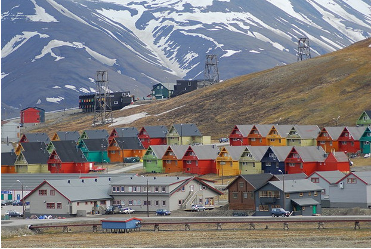<br>
      </td>
    </tr>
  </tbody>
</table>
<table style="text-align: left; width: 1024px;" border="0" cellpadding="2" cellspacing="2">
  <tbody>
    <tr>
      <td style="vertical-align: top;">Marina
woont sinds zes jaar hier en is goudsmid. Ze verdient nu een goede
boterham aan de vele toeristen die hier de laatste jaren met vliegtuig
of cruiseschip komen. Ze heeft een kleine vitrine in de plaatselijk
winkel waar ze haar spulletjes verkoopt. De houten huizen staan in
verband met de permafrost op palen boven de grond. De ramen zijn klein
en voorzien van drievoudig glas.s Avonds wil ik bij de nassi maaltijd
een paar biertjes drinken. Het blijkt echter absoluut onmogelijk om in
de lokale supermarkt enige alcoholhoudende drank te kopen. We hebben in
Noorwegen zo her en der enige biertjes uit onze voorraad weggegeven en
zitten nu zonder. Uitsluitend op vertoon van een vliegtuigticket mag
men&nbsp; hier alcoholica kopen. Dat wij op eigen kiel zo'n 2.000 mijl
hebben moeten zeilen om hier te komen is van geen belang, we kunnen een
permit vragen bij de Sysselmann! Ambtenarij ten top en daar ben ik
allergisch voor, dan maar geen bier.We brengen nog een bezoek aan onze
Ierse buurman Brian waar we een flink gat slaan in zijn voorraad Ierse
Whiskey. Brian zelf is geheelonthouder, onvoorstelbaar voor mij, doch
hij schept er veel genoegen in om ons de diverse Whiskeys uit zijn
vaderland Ierland aan te bieden. Gezien het feit dat zijn kachel nog
steeds defect is, helpt dat in niet geringe mate om een "Warme" sfeer
te scheppen. Morgen willen wij aan de terugreis te beginnen. Ik heb van
het vliegveld enige meerdaagse weersinfo gekregen en het lijkt de
komende dagen betrouwbaar weer te zijn zonder storm. Helaas blijkt dat
later, na enige dagen zeilen, niet geheel betrouwbaar te zijn doch dat
wisten wij toen gelukkig nog niet.<br><br>27 Juli vertrekken we uit
Longyearbyen en nu maar hopen dat het weer goed blijft met een
fatsoenlijke wind. Log 2.395'.&nbsp; Bij de uitgang van de Isfjorden
zien we een groen zeiljacht. Dat moet Henk de Velde zijn met zijn
"Campina". Henk wilde ten zuiden van Nova Zembla door de noordoost-
passage gaan. Hij ging er van uit dat hij met zijn bekende naam geen
visum nodig had, echter de Russen hebben hem terug gestuurd.
Formaliteiten zijn een absolute topper in Rusland. We hebben Henk
diverse malen opgeroepen doch hij had geen zin om te antwoorden. We
hadden nog het plan om naar de Hornsund in het zuiden te gaan en een
bezoek te brengen aan het Poolse onderzoekstation aldaar. Enige jaren
daarvoor werd er nog een bezoeker door een ijsbeer gedood. We laten het
echter maar zo en zeilen verder richting Noorwegen. We plannen om bij
Tromsø binnen te lopen zo'n 480'. Onderweg zien we enige Russische
trawlers, de blast van een walvis en een school bruinissen rond de
boot, maar verder is de zee hier absoluut leeg en verlaten. Je waant je
alleen op de wereld. De wind krimpt heel langzaam van SE naar E en
blijft krimpen. Dat past ons voorlopig wel want we moesten hoog aan de
wind zeilen, niet de meest aangename koers.<br><br>30 Juli geeft de
Navtex een stormwaarschuwing, maar het is nog ver weg en hopelijk zijn
we voordien binnen. De harde wind komt inmiddels uit het oosten, we
zeilen zwaar gereefd met een klein voorzeiltje. De weersberichten
blijven zeer slecht, de Navtex voorspelt NW 8-9. Ik vervang het blad
van de windvaan voor het veel dikkere en sterkere stormblad. Had ik nog
nooit gebruikt!&nbsp; De golven hebben lange witte schuimstrepen en
brekers zijn overal zichtbaar. We hebben forse regenbuien zodat het
beeld op de radar ook minder wordt. Alleen als we op de top van een
hoge golf zitten kunnen we snel om ons heen kijken maar verder kijk je
alleen tegen een waterwand op en we lopen het risico dat een breker de
kajuit in slaat. Het grootzeil was allang geheel geborgen en ik zet nu
alleen een zeer klein stukje voorzeil, we sluiten de luiken en varen
met een goede snelheid naar Noorwegen. Af en toe een flinke breker en
de kuip staat dan vol water maar verder gaat het goed. Wel besluit ik
om de aanloop naar Tromsø te vergeten en nu naar de grootste opening in
de met rotsen bezaaide Noorse kust te zeilen, we kunnen ons hier geen
navigatiefout veroorloven. Nog 84' te gaan. Het is koud weer. <br>Klaas
ligt in twee slaapzakken en heeft nog steeds koude voeten, leuke hobby
dat zeilen en de wind neemt nog steeds toe. Volgens de Navtex is enige
verbetering pas overmorgen in zicht. Het lijkt soms wel of er met een
zware moker op de zijwand van de boot wordt geslagen maar Tarka kan er
wel tegen hoewel het allesbehalve aangenaam is.<br><br>2 Augustus meren
we midden in de nacht om 00.30 uur aan te Skervøy in het noordelijkste
stukje van Noorwegen. We hebben 607'afgelegd, zijn steenkoud, vermoeid
doch tevreden. Kacheltje aangestoken en we blijven hier een paar dagen
om weer bij te komen.We weten dat het haventje van Støtt zeer klein is,
doch het moet een alleraardigst haventje zijn. We zoeken naar de ingang
doch kunnen het niet vinden. In de verte zien we een klein zeilbootje
ergens tussen de rotsen verdwijnen, zou het dáár dan wellicht zijn. Het
blijkt te kloppen doch aan het einde van het haventje zien we een
betonnen brug en we zien nergens zeilbootjes. Toch maar voorzichtig
naar binnen gevaren en, waarachtig, vlak voor de betonnen brug kunnen
we bakboord uit en belanden in het minuscule haventje, plaats biedend
aan drie boten. Het zeilbootje zien we hier ook liggen, het is een
Engelsman met een Drascombe, een overmaatse roeiboot met een klein
kajuitje. Ik maak een praatje en vraag of ze met dat kleine bootje
vanuit Engeland zijn gekomen. Het blijkt&nbsp; dat ze het bootje op een
vrachtschip hebben gezet en nu de Noorse kust verkennen. De eigenaar
van het lokale winkeltje fungeert tevens als havenmeester en beheerder
van het postkantoortje.In Bolga zien we zowaar de naamgever van mijn
boot, een vrouwtjesotter! Ze komt regelmatig even boven water om
plantenresten in haar bek te nemen waarna ze weer onder water
verdwijnt, waarschijnlijk om het nest wat comfortabeler te maken.
Overigens betekent de naam<br>Tarka in het Gaelic: "Little water
wonderer" hetgeen ik destijds een toepasselijke naam voor mijn bootje
vond. We zakken we de Noorse kust steeds verder af naar het zuiden. We
willen vanuit Skudeneshavn&nbsp; weer de oversteek maken naar
Nederland. We doen vele grotere en kleinere plaatsen aan zoals Tromsø,
Harstad, Rørvik, Haugesund. etc. en meren op 26 aug. aan te Skudenes.
We drinken hier een paar biertjes, vullen de diesel bij alsmede de
watertank en bekijken de weersberichten.<br><br>28 Aug. vertrekken we
met een harde, doch lopende NW wind naar Nederland. Onderweg weer het
gebruikelijke wachtsysteem aanhoudend, zeilen we met wisselende winden
mooi in de juiste richting.<br><br>31 Aug. lopen we 's nachts
Lauwersoog binnen om 's morgens door de sluis te gaan en via Dokkum en
Leeuwarden naar Drachten waar Tarka eerst weer wat rust zal krijgen.
Het is een prachtige en interessante zeiltocht geweest in een
fascinerend en imposant gebied, en Tarka heeft zich wederom uitstekend
gedragen.<br>Stand van het log in Drachten: 4.345'.<br><br><span style="font-weight: bold;">Noordlaren, Alphons Bodewes</span><br style="font-weight: bold;"><br><span style="font-weight: bold;">Jaarboek 2011 van Abel Tasman:&nbsp; "De Kompasroos"<br><br>Winnaar "Voorzittersprijs" Ned.Ver.van Kustzeilers 2001<br style="font-weight: bold;"></span><br>&nbsp;&nbsp;&nbsp; <br><br><br>
      </td>
    </tr>
  </tbody>
</table>
<br>
<br></body></html>